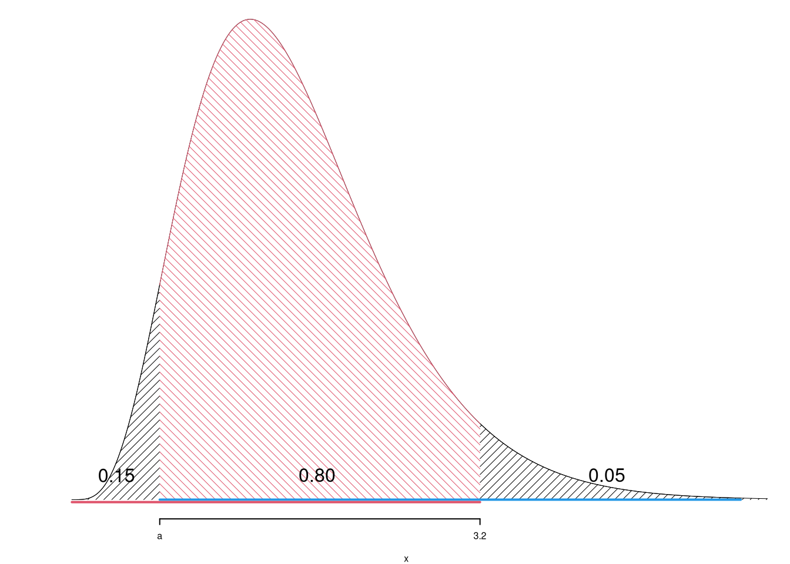

Anno 2025
Prova di Statistica 2025/06/09-1
Esercizio 1
Su un campione di \(150\) famiglie residenti in Emilia-Romagna, selezionate in base a composizione e reddito dichiarato, sono stati rilevati gli importi spesi annualmente in connessione a banda larga e dispositivi digitali (valori in centinaia di euro). Qui di seguito è riportata la distribuzione delle frequenze assolute degli importi rilevati.
| \([\text{x}_j,\) | \(\text{x}_{j+1})\) | \(n_j\) |
|---|---|---|
| 0 | 3 | 38 |
| 3 | 6 | 75 |
| 6 | 12 | 22 |
| 12 | 24 | 15 |
| 150 |
1.a (Punti 13/103 \(\rightarrow\) 3.9/31) Disegnare l’istogramma di densità percentuale.
| \([\text{x}_j,\) | \(\text{x}_{j+1})\) | \(n_j\) | \(f_j\) | \(b_j\) | \(h_j\) |
|---|---|---|---|---|---|
| 0 | 3 | 38 | 0.2533 | 3 | 8.4444 |
| 3 | 6 | 75 | 0.5000 | 3 | 16.6667 |
| 6 | 12 | 22 | 0.1467 | 6 | 2.4444 |
| 12 | 24 | 15 | 0.1000 | 12 | 0.8333 |
| 150 | 1.0000 | 24 |
1.b (Punti 4/103 \(\rightarrow\) 1.2/31) Quante imprese investono tra \(x_{0.15}\) il 15-esimo e \(x_{0.85}\) l’85-esimo percentile?
\[\begin{eqnarray*} \%(1.7763<X<9.9545) &=& (3-1.7763)\times h_{1}+ f_{ 2 }\times 100 + (9.9545-6)\times h_{3} \\ &=& (1.2237)\times 8.4444+ ( 0.5 )\times 100 + (3.9545)\times 2.4444 \\ &=& 0.7 \times(100)\\ \#( 1.776 < X < 9.954 ) &\approx& 105 \end{eqnarray*}\]
1.c (Punti 2/103 \(\rightarrow\) 0.6/31) Che relazione dobbiamo aspettarci tra media, mediana e moda?
1.d (Punti 2/103 \(\rightarrow\) 0.6/31) Siano \(x_1,...,x_n\), \(n\) dati tali per cui \(\bar x=3\). Posto \(y_i = 1.5+0.5\cdot x_i,\forall i\). Per quale valore \(y\) la funzione
\[ g(y)=\sum_{i=1}^n (y_i- y)^2 \]
raggiunge il suo minimo?
Esercizio 2
2.a (Punti 13/103 \(\rightarrow\) 3.9/31) Si consideri un’urna che ha 5 palline bianche, 5 nere e 5 verdi. Si estrae 3 volte con reinserimento. Sia \(X\) la variabile casuale che conta il numero di bianche su 3 estrazioni. Calcolare la probabilità che \(X\leq 1\).
\[\begin{eqnarray*} P( X \leq 1 ) &=& \binom{ 3 }{ 0 } 0.3333 ^{ 0 }(1- 0.3333 )^{ 3 - 0 }+\binom{ 3 }{ 1 } 0.3333 ^{ 1 }(1- 0.3333 )^{ 3 - 1 } \\ &=& 0.2963+0.4444 \\ &=& 0.7407 \end{eqnarray*}\]
2.b (Punti 4/103 \(\rightarrow\) 1.2/31) Si consideri un’urna che ha 5 palline bianche, 5 nere e 5 verdi. Si estrae 3 volte senza reinserimento. Sia \(X\) la variabile casuale che conta il numero di bianche su 3 estrazioni. Calcolare la probabilità che \(X\leq 1\).
\[\begin{eqnarray*} B_i &=& \text{Bianca all'estrazione $i$}\\ \bar B_i &=& \text{Non Bianca all'estrazione $i$}\\ P(X\le 1) &=& P(X=0) + P(X=1)\\ &=& P(\bar B_1\cap\bar B_2\cap\bar B_3)+\\ &+&P(B_1\cap\bar B_2 \cap \bar B_3)+P(\bar B_1\cap B_2 \cap \bar B_3)+P(\bar B_1\cap\bar B_2 \cap B_3)\\ &=& \frac {10}{15}\frac {9}{14}\frac {8}{13}+3\cdot\frac {5}{15}\frac {10}{14}\frac {9}{13}\\ &=& 0.3956 \end{eqnarray*}\]
2.c (Punti 2/103 \(\rightarrow\) 0.6/31) Sia \(X\) una VC definita su \(S_X=\{0,1,2,3\}\), posto \(Y=2X\) ricavare \(S_Y\).
2.d (Punti 2/103 \(\rightarrow\) 0.6/31) Sia \(X\) una VC, e siano \(P(X\leq 1)=0.1\), \(P(X> 2)=0.1\). Calcolare \[ P(X>2|X>1) \]
\[\begin{eqnarray} P(X>2|X>1) &=& \frac{P({X>2}\cap {X>1})}{P(X> 1)}\\ &=& \frac{P({X>2})}{P(X> 1)}\\ &=& \frac{0.1}{1-0.1}\\ &=& 0.1111 \end{eqnarray}\]
Esercizio 3
3.a (Punti 13/103 \(\rightarrow\) 3.9/31) Siano \(X_1,...,X_{100}\), 100 VC IID, \(X_i\sim \text{Pois}(\lambda=1)\), posto \[ S_{100} = X_1+ ... +X_{100} \] Calcolare \(P(S_{100}>90)\).
Teorema del Limite Centrale (somma di Poisson)
Siano \(X_1\),…,\(X_n\), \(n=100\) VC IID, tc \(X_i\sim\text{Pois}(\lambda=1)\)\(,\forall i\), posto: \[ S_n = X_1 + ... + X_n \] allora:\[\begin{eqnarray*} S_n & \mathop{\sim}\limits_{a}& N(n\lambda,n\lambda) \\ &\sim & N(100\cdot1,100\cdot1) \\ &\sim & N(100,100) \end{eqnarray*}\]\[\begin{eqnarray*} P( \bar X > 90 ) &=& P\left( \frac { \bar X - n\lambda }{ \sqrt{n\lambda} } > \frac { 90 - 100 }{\sqrt{ 100 }} \right) \\ &=& P\left( Z > -1 \right) \\ &=& 1-P(Z< -1 )\\ &=& 1-(1-\Phi( 1 )) \\ &=& 0.8413 \end{eqnarray*}\]
Esercizio 4
4.a (Punti 3/103 \(\rightarrow\) 0.9/31) La VAC Gamma, \(X \sim \text{Gamma}(\alpha, \beta)\), è una VC continua, definita su \(S_X=\mathbb{R}^+\), \(\alpha>0\) e \(\beta>0\), con densità che per \(\alpha > 1\) assume una forma campanulare con asimmetria positiva, mentre per \(\alpha = 1\) coincide con l’esponenziale e per \(\alpha < 1\) è fortemente asimmetrica con una concentrazione di densità vicino allo zero. Il parametro \(\beta\) controlla la dispersione. La distribuzione Gamma è usata per modellare tempi di attesa o grandezze cumulative sempre positive.
Si consideri un campione \(X_1,\dots,X_n \sim \text{Gamma}(\alpha,\beta)\) IID. Lo stimatore di massima verosimiglianza per \(\beta\) è \[ \hat\beta = \frac {\bar X}\alpha,\qquad \text{dove $\bar X$ è la media campionaria} \] Sapendo che \[ E(\hat\beta) = \beta~~~ \text{ e }~~~ V(\hat\beta) = \frac{\beta^2}{\alpha \cdot n}, \] \(\hat\beta\) è consistente?
Poiché \(\hat\beta\) è asintoticamente corretto (cioè \(E(\hat\beta) = \beta\)) e la sua varianza tende a zero:
\[ \lim_{n \to \infty} V(\hat\beta) = \lim_{n \to \infty} \frac{\beta^2}{\alpha n} = 0, \]
segue che:
\[ \lim_{n \to \infty} MSE(\hat\beta) = 0, \]
quindi \(\hat\beta\) è consistente.
4.b (Punti 3/103 \(\rightarrow\) 0.9/31) Sia \(\hat\theta\) uno stimatore di massima verosimiglianza per \(\theta\) qual è la sua distribuzione asintotica?
4.c (Punti 3/103 \(\rightarrow\) 0.9/31) Definire la significatività e la potenza di un test.
4.d (Punti 3/103 \(\rightarrow\) 0.9/31) Si è lanciata una moneta 100 volte per testare se è una moneta ben bilanciata, si è sono ottenuti 74 test su 100 lanci. Posto a test \[ \begin{cases} H_0: \pi = \frac 12\\ H_1: \pi\ne\frac 12 \end{cases} \] si è ottenuto un \(p_\text{value}=0.000002\). Cosa si può concludere, la moneta è bilanciata oppure no?
Poiché il \(p_\text{value} = 0.000002\) è molto più piccolo di qualsiasi livello di significatività convenzionale (ad esempio \(\alpha = 0.05\), \(0.01\), \(0.001\)), si rifiuta l’ipotesi nulla \(H_0\).
Ci sono fortissime evidenze contro l’ipotesi che la moneta sia bilanciata. Quindi non si può ritenere che la moneta sia equa.
Esercizio 5
In un’indagine condotta sui 52 stati USA (i 50 stati, il District of Columbia e Porto Rico), sono stati raccolti dati da \(n = 52\) stati. Per ciascuno stato si è rilevata la percentuale di popolazione sotto la soglia federale di povertà (\(X\)) e il tasso di natalità (\(Y\), in numero medio annuo di nati ogni 1000 abitanti). Si vuole studiare l’associazione tra incidenza della povertà e dinamica demografica nei diversi contesti statali.
Si osservano le seguenti statistiche: \(\sum_{i=1}^{52}x_i=387.3\), \(\sum_{i=1}^{52}y_i=166.7\), \(\sum_{i=1}^{52}x_i^2=2978.53\), \(\sum_{i=1}^{52}y_i^2=540.47\) e \(\sum_{i=1}^{52}x_iy_i=1224.22\).
5.a (Punti 13/103 \(\rightarrow\) 3.9/31) Per il New Hampshire si è osservato \(x_{NH}=5.4\) e \(y_{NH}=3.6\), stimare il modello di regressione dove \(Y\) viene spiegata da \(X\) e calcolare il residuo per i dati del New Hampshire
\[\begin{eqnarray*} \bar x &=&\frac 1 n\sum_{i=1}^n x_i = \frac {1}{ 52 } 387.3 = 7.448 \\ \bar y &=&\frac 1 n\sum_{i=1}^n y_i = \frac {1}{ 52 } 166.7 = 3.206 \\ \hat\sigma_X^2&=&\frac 1 n\sum_{i=1}^n x_i^2-\bar x^2=\frac {1}{ 52 } 2979 - 7.4481 ^2= 1.806 \\ \hat\sigma_Y^2&=&\frac 1 n\sum_{i=1}^n y_i^2-\bar y^2=\frac {1}{ 52 } 540.5 - 3.2058 ^2= 0.1167 \\ \text{cov}(X,Y)&=&\frac 1 n\sum_{i=1}^n x_i~y_i-\bar x\bar y=\frac {1}{ 52 } 1224 - 7.4481 \cdot 3.2058 = -0.3341 \\ \hat\beta_1 &=& \frac{\text{cov}(X,Y)}{\hat\sigma_X^2} \\ &=& \frac{ -0.3341 }{ 1.806 } = -0.1851 \\ \hat\beta_0 &=& \bar y - \hat\beta_1 \bar x\\ &=& 3.206 - (-0.1851) \times 7.4481 = 4.584 \end{eqnarray*}\]\[\begin{eqnarray*} \hat y_i &=&\hat\beta_0+\hat\beta_1 x_i=\\ &=& 4.584 + (-0.1851) \times 5.4 = 3.585 \\ \hat \varepsilon_i &=& y_i-\hat y_i\\ &=& 3.6 - 3.5848 = 0.01523 \end{eqnarray*}\]
5.b (Punti 4/103 \(\rightarrow\) 1.2/31) Il modello si adatta bene ai dati?
\[\begin{eqnarray*} r&=&\frac{\text{cov}(X,Y)}{\sigma_X\sigma_Y}=\frac{ -0.3341 }{ 1.344 \times 0.3416 }= -0.7279 \\ r^2&=& 0.5298 < 0.75 \end{eqnarray*}\]
Il modello non si adatta bene ai dati.
Il modello spiega il \(52.98\%\) della variabilità totale della \(Y\).
5.c (Punti 2/103 \(\rightarrow\) 0.6/31) Qual è la differenza tra interpolazione ed estrapolazione?
5.d (Punti 2/103 \(\rightarrow\) 0.6/31) Cosa significa che \(r\) è invariante ai cambiamenti di scala?
5.e (Punti 2/103 \(\rightarrow\) 0.6/31) Se nel modello di regressione stimato nel punto 5.a trasformassimo l’indice di povertà \(X\) in un tasso di ricchezza \(W=100-X\), quanto varrebbe \(r_{WY}\)?
5.f (Punti 13/103 \(\rightarrow\) 3.9/31) Testare l’ipotesi che \(\beta_0\) sia uguale a 0, contro l’alternativa che sia diverso per \(\alpha=0.1,0.05,0.01,0.001\) e dare una valutazione approssimativa del \(p_\text{value}\) (ad esempio il \(p_\text{value}\) è minore di 0.001, compreso tra 0.05 e tra 0.01, ecc.).
\(\fbox{A}\) FORMULAZIONE DELLE IPOTESI
\[\begin{cases} H_0: \beta_0 = \beta_{0;H_0}=0 \\ H_1: \beta_0 \neq \beta_{0;H_0}=0 \end{cases}\]
\(\fbox{B}\) SCELTA E CALCOLO STATISTICA-TEST, \(T\) Test su un coefficiente di regressione: \(\Rightarrow\) t-Test.
\[\begin{eqnarray*} \hat{\sigma_\varepsilon}^2&=&(1-r^2)\hat\sigma_Y^2\\ &=& (1- 0.5298 )\times 0.1167 \\ &=& 0.0549 \\ S_\varepsilon^2 &=& \frac{n} {n-2} \hat{\sigma_\varepsilon}^2\\ &=& \frac{ 52 } { 52 -2} \hat{\sigma_\varepsilon}^2 \\ &=& \frac{ 52 } { 52 -2} \times 0.0549 = 0.0571 \end{eqnarray*}\]
E quindi\[\begin{eqnarray*}
V(\hat\beta_{0}) &=& \sigma_{\varepsilon}^{2} \left( \frac{1} {n} + \frac{\bar{x}^{2}} {n \hat{\sigma}^{2}_{X}} \right)\\
\widehat{V(\hat\beta_{0})} &=& S_{\varepsilon}^{2}\left( \frac{1} {n} + \frac{\bar{x}^{2}} {n \hat{\sigma}^{2}_{X}} \right)\ \\
&=& 0.0571 \times\left( \frac{1} { 52 } + \frac{ 7.448 ^{2}} { 52 \times 1.806 } \right)\\
\widehat{SE(\hat\beta_{0})} &=& \sqrt{ 0.0348 }\\
&=& 0.1865
\end{eqnarray*}\]
\[\begin{eqnarray*}
\frac{\hat\beta_{ 0 } - \beta_{ 0 ;H_0}} {\widehat{SE(\hat\beta_{ 0 })}}&\sim&t_{n-2}\\
t_{\text{obs}}
&=& \frac{ ( 4.584 - 0 )} { 0.1866 }
= 24.57 \, .
\end{eqnarray*}\]
\(\fbox{C}\) CONCLUSIONE
Siccome \(H_1\) è bilaterale, considereremo \(\alpha/2\), anziché \(\alpha\)
\(\alpha=0.1, 0.05, 0.01, 0.001\) e quindi \(\alpha/2=0.05, 0.025, 0.005, 0.0005\)
I valori critici sono
\(t_{52-2;0.05}=1.6759\); \(t_{52-2;0.025}=2.0086\); \(t_{52-2;0.005}=2.6778\); \(t_{52-2;0.0005}=3.496\)
Siccome \(|t_\text{obs}|=24.5688>3.496\), quindi rifiuto \(H_0\) sotto all’1‰,
\(p_\text{value}<0.001\), estremamente significativo \(\fbox{***}\).
Il \(p_{\text{value}}\) è
\[ p_{\text{value}} = P(|T_{52-2}|>|24.57|)=2P(T_{52-2}>24.57)=0e+00 \]
Attenzione il calcolo del \(p_\text{value}\) con la \(T\) è puramente illustrativo e non può essere riprodotto senza una calcolatrice statistica adeguata.\[ 0 < p_\text{value}= 0e+00 \leq 0.001 \]
Prova di Statistica 2025/06/09-2
Esercizio 1
Su un campione di \(150\) famiglie residenti in Emilia-Romagna, selezionate in base a composizione e reddito dichiarato, sono stati rilevati gli importi spesi annualmente in connessione a banda larga e dispositivi digitali (valori in centinaia di euro). Qui di seguito è riportata la distribuzione delle frequenze relative degli importi rilevati.
| \([\text{x}_j,\) | \(\text{x}_{j+1})\) | \(f_j\) |
|---|---|---|
| 0 | 3 | 0.2 |
| 3 | 5 | 0.5 |
| 5 | 15 | 0.2 |
| 15 | 30 | 0.1 |
| 1.0 |
1.a (Punti 13/103 \(\rightarrow\) 3.9/31) Individuare l’intervallo modale.
| \([\text{x}_j,\) | \(\text{x}_{j+1})\) | \(n_j\) | \(f_j\) | \(b_j\) | \(h_j\) |
|---|---|---|---|---|---|
| 0 | 3 | 30 | 0.2 | 3 | 6.6667 |
| 3 | 5 | 75 | 0.5 | 2 | 25.0000 |
| 5 | 15 | 30 | 0.2 | 10 | 2.0000 |
| 15 | 30 | 15 | 0.1 | 15 | 0.6667 |
| 150 | 1.0 | 30 |
1.b (Punti 4/103 \(\rightarrow\) 1.2/31) Quante imprese investono tra \(x_{0.25}\) il 25-esimo e \(x_{0.75}\) il 75-esimo percentile?
\[\begin{eqnarray*} \%(3.2<X<7.5) &=& (5-3.2)\times h_{2}+ (7.5-5)\times h_{3} \\ &=& (1.8)\times 25+ (2.5)\times 2 \\ &=& 0.5 \times(100)\\ \#( 3.2 < X < 7.5 ) &\approx& 75 \end{eqnarray*}\]
1.c (Punti 2/103 \(\rightarrow\) 0.6/31) La media è pari a \(\bar x=6.48\), senza disegnare l’istogramma, che forma distributiva dobbiamo aspettarci?
1.d (Punti 2/103 \(\rightarrow\) 0.6/31) La spesa media della regione Emilia-Romagna, calcolata su 150 famiglie è pari \(\bar x_{ER}=6.48\), quella della Lombardia, calcolata su 165 famiglie è pari \(\bar x_{L}=6.6\), mentre quella del Veneto, calcolata su 145 famiglie è pari \(\bar x_{V}=5.28\). Qual è la spesa media complessiva delle tre regioni?
Per trovare la spesa media delle tre regioni aggregate, dobbiamo considerare sia le medie delle singole regioni sia il numero di famiglie su cui sono state calcolate. La formula per la media aggregata \(\bar{x}_{agg}\) è:
\[\begin{eqnarray} \bar{x}_{agg} &=& \frac{n_{ER} \bar{x}_{ER} + n_{L} \bar{x}_{L} + n_{V} \bar{x}_{V}}{n_{ER} + n_{L} + n_{V}}\\ &=& \frac{150\cdot6.48+165\cdot6.6+145\cdot5.28}{150+165+145}\\ &=& 6.1448 \end{eqnarray}\]
Dove:
- \(n_{ER}\) è il numero di famiglie in Emilia-Romagna
- \(n_{L}\) è il numero di famiglie in Lombardia
- \(n_{V}\) è il numero di famiglie in Veneto
- \(\bar{x}_{ER}\), \(\bar{x}_{L}\), \(\bar{x}_{V}\) sono le spese medie delle rispettive regioni
Esercizio 2
2.a (Punti 13/103 \(\rightarrow\) 3.9/31) Sia \(X\) il numero di treni in ritardo nella stazione di Bologna Centrale alle 17, \(X\sim\text{Pois}(4.3)\). Calcolare la probabilità che \(X\geq 2\).
\[\begin{eqnarray*} P( X \geq 2 ) &=& 1-P( X < 2 ) \\ &=& 1-\left( \frac{ 4.3 ^{ 0 }}{ 0 !}e^{- 4.3 }+\frac{ 4.3 ^{ 1 }}{ 1 !}e^{- 4.3 } \right)\\ &=& 1-( 0.0136+0.0583 )\\ &=& 1- 0.0719 \\ &=& 0.9281 \end{eqnarray*}\]
2.b (Punti 4/103 \(\rightarrow\) 1.2/31) Sia \(X\sim\text{Pois}(4.3)\), posto \(A=\{X\geq 2\}\), \(B=\{X\geq 1\}\), calcolare \(P(A|B)\).
\[\begin{eqnarray} P(B) &=& 0.9864\\ P(A\cap B) &=& P( \{X \geq 1\} \cap \{X \geq 2\})\\ &=& P( X \geq 2)\\ &=& 0.9281\\ P(A|B) &=& \frac{P(A\cap B)}{P(B)}\\ &=& \frac{0.9281}{0.9864}\\ &=& 0.9409 \end{eqnarray}\]
2.c (Punti 2/103 \(\rightarrow\) 0.6/31) Sia \(X\) una variabile casuale con supporto \(S_X=\{-1,0,1\}\). Posto \(Y=1+2\cdot X\), ricavare il supporto di \(Y\), \(S_Y\).
\[ S_Y=\{1+2\cdot (-1),1+2\cdot 0+1+2\cdot (+1)\}=\{-1,1,3\} \]
2.d (Punti 2/103 \(\rightarrow\) 0.6/31) Sia \(X\) una variabile casuale tale che \(P(X>1.5)=0.9\) e \(P(X>3.5)=0.1\), calcolare \(P(X\leq 1.5|X\leq 3.5)\).
\[ P(X\leq 1.5|X\leq 3.5) = \frac{0.1}{0.9}=0.1111 \]
Esercizio 3
3.a (Punti 13/103 \(\rightarrow\) 3.9/31) Siano \(X_1,...,X_{100}\), 100 VC IID, \(X_i\sim \text{Pois}(\lambda=1)\), posto \[ \bar X=\frac{S_{100}}{100} = \frac{X_1+ ... +X_{100}}{100} \] Calcolare \(P(\bar X>0.9)\).
Teorema del Limite Centrale (media di Poisson)
Siano \(X_1\),…,\(X_n\), \(n=100\) VC IID, tc \(X_i\sim\text{Pois}(\lambda=1)\)\(,\forall i\), posto: \[ \bar X=\frac{S_n}n = \frac{X_1 + ... + X_n}n \] allora:\[\begin{eqnarray*} \hat\pi & \mathop{\sim}\limits_{a}& N(\lambda,\lambda/n) \\ &\sim & N\left(1,\frac{1}{100}\right) \\ &\sim & N(1,0.01) \end{eqnarray*}\]\[\begin{eqnarray*} P( \bar X > 0.9 ) &=& P\left( \frac { \bar X - \lambda }{ \sqrt{\lambda/n} } > \frac { 0.9 - 1 }{\sqrt{ 0.01 }} \right) \\ &=& P\left( Z > -1 \right) \\ &=& 1-P(Z< -1 )\\ &=& 1-(1-\Phi( 1 )) \\ &=& 0.8413 \end{eqnarray*}\]
Esercizio 4
4.a (Punti 3/103 \(\rightarrow\) 0.9/31) Si consideri il modello normale \(X\sim N(\mu,\sigma^2)\). Sia \(\hat\mu\) lo stimatore di massima verosimiglianza per \(\sigma^2\)
\[ \hat\sigma^2 = \frac 1n \sum_{i=1}^n (X_i-\hat\mu)^2 \]
sapendo che
\[ V(\hat\sigma^2)= \frac{2\sigma^4}n \]
Dimostrare la consistenza di \(\hat\sigma^2\)
\[\begin{eqnarray} E(\hat\sigma^2)&=& \frac{n-1}{n}\sigma^2\\ V(\hat\sigma^2)&=& \frac{2\sigma^4}n\\ MSE(\hat\sigma^2) &=& V(\hat\sigma^2)+\left(E(\hat\sigma^2)-\sigma^2\right)^2\\ &=& \frac{2\sigma^4}n + \left(\frac{n-1}{n}\sigma^2-\sigma^2\right)^2 \end{eqnarray}\]
Siccome \(\hat\sigma^2\) è asintoticamente corretto e la sua varianza va a zero con \(n\), allora
\[\begin{eqnarray} \lim_{n\to\infty} E(\hat\sigma^2) & =& \lim_{n\to\infty}\frac{n}{n-1}\sigma^2=\sigma^2\\ \lim_{n\to\infty} V(\hat\sigma^2) &=& \lim_{n\to\infty}\frac{2\sigma^4}n=0\\ \end{eqnarray}\]
allora \[ \lim_{n\to\infty} MSE(\hat\sigma^2) = 0 \]
Alternativamente
\[\begin{eqnarray} \lim_{n\to\infty} MSE(\hat\sigma^2) &=& \lim_{n\to\infty}\frac{n}{n-1}\sigma^2=\sigma^2\\ &=& \lim_{n\to\infty}\frac{2\sigma^4}n + \lim_{n\to\infty}\left(\frac{n}{n-1}\sigma^2-\sigma^2\right)^2\\ &=& 0 + \left(\lim_{n\to\infty}\frac{n}{n-1}\sigma^2-\sigma^2\right)^2\\ &=& 0 + \left(\sigma^2-\sigma^2\right)^2\\ &=& 0 + 0 = 0 \end{eqnarray}\]
4.b (Punti 3/103 \(\rightarrow\) 0.9/31) Siano \(h_1\) e \(h_2\) due stimatori per \(\theta\), cosa significa che \(h_1\) è più efficiente di \(h_2\)?
4.c (Punti 3/103 \(\rightarrow\) 0.9/31) Siano \(T_1\) e \(T_2\) due test per lo stesso sistema di ipotesi con la stessa significatività \(\alpha\), siano \(\beta_1\) la probabilità di errore di secondo tipo del test \(T_1\) e \(\beta_2\) la probabilità di errore di secondo tipo del test \(T_2\). Cosa significa dire che \(T_1\) è più potente di \(T_2\)?
4.d (Punti 3/103 \(\rightarrow\) 0.9/31) In un’indagine sui consumi in beni alimentari sono stati intervistati 13 nuclei familiari al Nord d’Italia e 15 al Sud. Per le \(n_N=18\) famiglie del nord si è osservato un consumo medio pari a \(\mu_N=1.8\) mila euro con una deviazione standard pari a \(\hat\sigma_N=1.1\) mila euro, mentre per le \(n_S=21\) famiglie del sud si è osservato un consumo medio pari a \(\mu_S=0.8\) mila euro con una deviazione standard pari a \(\hat\sigma_S=0.9\) mila euro.
Sotto ipotesi di omogeneità, si è testata l’ipotesi che il consumo medio sia uguale tra nord e sud, contro l’alternativa che sia maggiore al nord, \[ \begin{cases} H_0: \mu_\text{N} = \mu_\text{S} \\ H_1: \mu_\text{N} > \mu_\text{S} \end{cases} \] è risultato \(p_{\text{value}} = 0.002161\). Possiamo concludere che il consumo medio al nord sia maggiore di quello al sud? Perché?
Esercizio 5
5.a (Punti 3/103 \(\rightarrow\) 0.9/31) Su un campione di \(n = 80\) comuni dell’area industriale compresa tra Bologna e Modena, è stato rilevato se il comune abbia attivato uno sportello digitale per l’accesso ai servizi sociali. Lo studio ha mostrato che 56 comuni su 80 (il 70% del campione) hanno attivato questo servizio.
Costruire un intervallo di confidenza al 95% per \(\pi\), la quota di comuni dell’area Bologna–Modena che hanno attivato uno sportello digitale per i servizi sociali.
\(1-\alpha =0.95\) e quindi \(\alpha=0.05\rightarrow \alpha/2=0.025\)
\[ \hat\pi = \frac{S_n}n = \frac{ 56 }{ 80 }= 0.7 \]
\[\begin{eqnarray*} Idc: & & \hat\pi \pm z_{\alpha/2} \times \sqrt{\frac{\hat\pi(1-\hat\pi)}{n}} \\ & & 0.7 \pm 1.96 \times \sqrt{\frac{ 0.7 (1- 0.7 )}{ 80 }} \\ & & 0.7 \pm 1.96 \times 0.05123 \\ & & [ 0.5996 , 0.8004 ] \end{eqnarray*}\]
5.b (Punti 10/103 \(\rightarrow\) 3/31) Un’indagine condotta a livello nazionale ha mostrato che la percentuale di comuni con sportello digitale per i servizi sociali è pari all’80%. Testare l’ipotesi che nella zona Bologna–Modena la quota sia uguale a quella nazionale contro l’alternativa che sia minore. Risolvere con il \(p_\text{value}\) e confrontarlo per \(\alpha = 0.1,\ 0.05,\ 0.01,\ 0.001\).
Test \(Z\) per una proporzione
La stima \[\hat\pi=\frac { 56 } { 80 }= 0.7 \]
\(\fbox{A}\) FORMULAZIONE DELLE IPOTESI
\[\begin{cases} H_0: \pi = \pi_0=0.8 \\ H_1: \pi < \pi_0=0.8 \end{cases}\]
\(\fbox{B}\) SCELTA E CALCOLO STATISTICA-TEST, \(Z\) Test Binomiale per \(n\) grande: \(\Rightarrow\) z-Test.
\[\begin{eqnarray*} \frac{\hat\pi - \pi_{0}} {\sqrt {\pi_0(1-\pi_0)/\,n}}&\sim&N(0,1)\\ z_{\text{obs}} &=& \frac{ ( 0.7 - 0.8 )} {\sqrt{ 0.8 (1- 0.8 )/ 80 }} = -2.236 \,. \end{eqnarray*}\]
\(\fbox{C}\) CONCLUSIONE
Il \(p_{\text{value}}\) è
\[ p_{\text{value}} = P(Z<-2.24)=0.012674 \]
\[ 0.01 < p_\text{value}= 0.012674 \leq 0.05 \]
Rifiuto \(H_0\) al 5%,
\(0.01<p_\text{value}<0.05\), significativo \(\fbox{*}\).
Esercizio 6
In un’indagine comparativa tra Stati OCSE, sono stati raccolti dati da \(n = 30\) paesi. Per ciascun paese si è rilevata la media annua di ore lavorate per addetto (\(X\), in migliaia di ore) e il valore aggiunto per addetto (\(Y\), in migliaia di dollari USA a parità di potere d’acquisto). Si vuole studiare l’associazione tra intensità del lavoro e produttività del lavoro nei diversi contesti nazionali.
Si osservano le seguenti statistiche: \(\sum_{i=1}^{30}x_i=51.41\), \(\sum_{i=1}^{30}y_i=55.33\), \(\sum_{i=1}^{30}x_i^2=89.93\), \(\sum_{i=1}^{30}y_i^2=104.9\) e \(\sum_{i=1}^{30}x_iy_i=96.97\).
6.a (Punti 13/103 \(\rightarrow\) 3.9/31) Per la Grecia si è osservato \(x_{\text{GR}}=1.5871\) e \(y_{\text{GR}}=1.626\), stimare il modello di regressione dove \(Y\) viene spiegata da \(X\) e calcolare il residuo per i dati della Grecia.
\[\begin{eqnarray*} \bar x &=&\frac 1 n\sum_{i=1}^n x_i = \frac {1}{ 30 } 51.41 = 1.714 \\ \bar y &=&\frac 1 n\sum_{i=1}^n y_i = \frac {1}{ 30 } 55.33 = 1.844 \\ \hat\sigma_X^2&=&\frac 1 n\sum_{i=1}^n x_i^2-\bar x^2=\frac {1}{ 30 } 89.93 - 1.7137 ^2= 0.06101 \\ \hat\sigma_Y^2&=&\frac 1 n\sum_{i=1}^n y_i^2-\bar y^2=\frac {1}{ 30 } 104.9 - 1.8443 ^2= 0.0951 \\ \text{cov}(X,Y)&=&\frac 1 n\sum_{i=1}^n x_i~y_i-\bar x\bar y=\frac {1}{ 30 } 96.97 - 1.7137 \cdot 1.8443 = 0.07178 \\ \hat\beta_1 &=& \frac{\text{cov}(X,Y)}{\hat\sigma_X^2} \\ &=& \frac{ 0.07178 }{ 0.06101 } = 1.176 \\ \hat\beta_0 &=& \bar y - \hat\beta_1 \bar x\\ &=& 1.844 - 1.1764 \times 1.7137 = -0.1716 \end{eqnarray*}\]\[\begin{eqnarray*} \hat y_i &=&\hat\beta_0+\hat\beta_1 x_i=\\ &=& -0.1716 + 1.1764 \times 1.5871 = 1.695 \\ \hat \varepsilon_i &=& y_i-\hat y_i\\ &=& 1.626 - 1.6954 = -0.06937 \end{eqnarray*}\]
6.b (Punti 4/103 \(\rightarrow\) 1.2/31) Quant’è la varianza spiegata dal modello?
\[\begin{eqnarray*} r&=&\frac{\text{cov}(X,Y)}{\sigma_X\sigma_Y}=\frac{ 0.07178 }{ 0.247 \times 0.3084 }= 0.9423 \\ r^2&=& 0.8879 > 0.75 \end{eqnarray*}\]
Il modello si adatta bene ai dati.
Il modello spiega il \(88.79\%\) della variabilità totale della \(Y\).
6.c (Punti 2/103 \(\rightarrow\) 0.6/31) Perché la previsione per \(x=2\) è più affidabile di quella per \(x=17\)?
6.d (Punti 2/103 \(\rightarrow\) 0.6/31) Cosa significa che \(r\) è un numero puro?
6.e (Punti 2/103 \(\rightarrow\) 0.6/31) In un modello di regressione lineare, si è stimato \(\hat\beta_1 = 1.44\), con \(\hat\sigma_X = 0.8\) e \(\hat\sigma_Y = 1.2\). Calcolare il coefficiente di correlazione \(r\).
Nel modello di regressione semplice, il coefficiente angolare \(\hat\beta_1\) è legato al coefficiente di correlazione \(r\) dalla formula:
\[ \hat\beta_1 = r \frac{\hat\sigma_Y}{\hat\sigma_X} \Rightarrow r = \hat\beta_1 \cdot \frac{\hat\sigma_X}{\hat\sigma_Y} \]
Dati:
- \(\hat\beta_1 = 1.44\)
- \(\hat\sigma_X = 0.8\)
- \(\hat\sigma_Y = 1.2\)
Calcolo:
\[ r = 1.44 \cdot \frac{0.8}{1.2} = 1.44 \cdot 0.6667 = 0.96 \]
Prova di Statistica 2025/06/09-3
Esercizio 1
Su un campione di \(150\) famiglie residenti in Emilia-Romagna, selezionate in base a composizione e reddito dichiarato, sono stati rilevati gli importi spesi annualmente in connessione a banda larga e dispositivi digitali (valori in centinaia di euro). Qui di seguito è riportata la distribuzione delle densità percentuali degli importi rilevati.
| \([\text{x}_j,\) | \(\text{x}_{j+1})\) | \(h_j\) |
|---|---|---|
| 0 | 3 | 6.667 |
| 3 | 5 | 25.000 |
| 5 | 10 | 4.000 |
| 10 | 30 | 0.500 |
1.a (Punti 13/103 \(\rightarrow\) 3.9/31) Calcolare il valore approssimativo della mediana.
| \([\text{x}_j,\) | \(\text{x}_{j+1})\) | \(n_j\) | \(f_j\) | \(b_j\) | \(h_j\) | \(F_j\) |
|---|---|---|---|---|---|---|
| 0 | 3 | 30 | 0.2 | 3 | 6.667 | 0.2 |
| 3 | 5 | 75 | 0.5 | 2 | 25.000 | 0.7 |
| 5 | 10 | 30 | 0.2 | 5 | 4.000 | 0.9 |
| 10 | 30 | 15 | 0.1 | 20 | 0.500 | 1.0 |
| 150 | 1.0 | 30 |
\[\begin{eqnarray*}
p &=& 0.5 , \text{essendo }F_{ 2 }= 0.7 > 0.5 \Rightarrow j_{ 0.5 }= 2 \\
x_{ 0.5 } &=& x_{\text{inf}; 2 } + \frac{ { 0.5 } - F_{ 1 }} {f_{ 2 }} \cdot b_{ 2 } \\
&=& 3 + \frac {{ 0.5 } - 0.2 } { 0.5 } \cdot 2 \\
&=& 4.2
\end{eqnarray*}\]

1.b (Punti 4/103 \(\rightarrow\) 1.2/31) Qual è la percentuale di imprese che investe tra il 30-esimo percentile \(x_{0.30}\) e e il 60-esimo percentile \(x_{60}\)?
\[ \%(x_{0.30}<X<x_{0.60}) = (F(x_{0.60})-F(x_{0.30}))\times 100\% = (0.60- 0.30)\times 100\%=30\% \]
1.c (Punti 2/103 \(\rightarrow\) 0.6/31) La media è pari a \(\bar x=5\), senza disegnare l’istogramma, che forma distributiva dobbiamo aspettarci?
1.d (Punti 2/103 \(\rightarrow\) 0.6/31) Se \(\{x_1,...,x_n\}\) è una serie di dati con media aritmetica \(\bar x=\frac 1n\sum_i x_i=0.8\) e varianza \(\sigma_X^2=\frac 1n\sum_i(x-\bar x)^2=2.25\). Posto \[ y_i = 1-x_i,~~\forall i=1,...,n \] ricavare media aritmetica e varianza delle \(\{y_1,...,y_n\}\).
\[ \bar y = 1-\bar x = 0.2 ;~~~~\sigma_Y^2=(-1)^2\sigma_X^2=2.25 \]
Esercizio 2
2.a (Punti 13/103 \(\rightarrow\) 3.9/31) Sia \(X\sim N(1,2)\) e sia \(Y\sim N(-1,2)\), \(X\) e \(Y\) indipendenti sia \(A=\{X>0\}\), \(B=\{X<1\}\) e \(C=\{Y<1\}\). Calcolare \(P(A\cap B\cap C)\).
\[\begin{eqnarray*} P( 0 < X \leq 1 ) &=& P\left( \frac { 0 - 1 }{\sqrt{ 2 }} < \frac { X - \mu }{ \sigma } \leq \frac { 1 - 1 }{\sqrt{ 2 }}\right) \\ &=& P\left( -0.71 < Z \leq 0 \right) \\ &=& \Phi( 0 )-\Phi( -0.71 )\\ &=& \Phi( 0 )-(1-\Phi( 0.71 )) \\ &=& 0.5 -(1- 0.7611 ) \\ &=& 0.2611 \end{eqnarray*}\] \[\begin{eqnarray*} P( Y < 1 ) &=& P\left( \frac { Y - \mu }{ \sigma } < \frac { 1 - ( -1 ) }{\sqrt{ 2 }} \right) \\ &=& P\left( Z < 1.41 \right) \\ &=& \Phi( 1.41 ) \\ &=& 0.9207 \end{eqnarray*}\]\[\begin{eqnarray} P( A\cap B \cap C ) &=& P( A\cap B )\cdot P( C ) \\ &=& 0.2939 \times 0.9484 \\ &=& 0.2787 \end{eqnarray}\]
2.b (Punti 4/103 \(\rightarrow\) 1.2/31) , posto \(W=(X+Y)/2\), calcolare \(P(W<1|W>-1)\).
\[ W\sim N(+1-1,(1/2)^2(1+1)) \]
\[ P(W<1|W>-1)=\frac{P(-1<W<1)}{P(W>-1)}=\frac{0.6827}{0.8413}=0.8114 \]
2.c (Punti 2/103 \(\rightarrow\) 0.6/31) Se \(A\) e \(B\) sono due eventi tali che \(P(A)=0.2\), \(P(B)=0.6\), e \(P(A\cup B)=0.6\). Gli eventi \(A\) e \(B\) sono incompatibili? Perché?
No, perché se lo fossero \[ P(A\cup B)=P(A)+P(B)=0.8\ne 0.6 \]
2.d (Punti 2/103 \(\rightarrow\) 0.6/31) Sia \(X\) na VC tale che \(P(X\le-1)=0.1\) e \(P(X>1)=0.1\), calcolare \[ P(X>-1|X\le 1) \]
\[\begin{eqnarray*} P(X>-1|X\le 1) &=& \frac{P(\{X>-1\}\cap \{X\le 1\})}{P(X\le 1)}\\ &=& \frac{P(-1 < X \le 1)}{1- P(X> 1)}\\ &=& \frac{P(X\le 1)-P(X\le -1)}{0.9}\\ &=& \frac{0.8}{0.9}=0.8889 \end{eqnarray*}\]
Esercizio 3
3.a (Punti 13/103 \(\rightarrow\) 3.9/31) Da un’urna che contiene due bianche e due rosse si estrae 4 volte con reinserimento. Si vince se escono esattamente due bianche su quattro estrazione e si perde altrimenti. Si ripete il gioco per \(n=100\) volte. Calcolare la probabilità di vincerà più di 40 volte.
la probabilità di vincere una partita è \[\begin{eqnarray*} P( X_i = 2 ) &=& \binom{ 4 }{ 2 } 0.5 ^{ 2 }(1- 0.5 )^{ 4 - 2 } \\ &=& 6 \times 0.5 ^{ 2 }(1- 0.5 )^{ 2 } \\ &=& 0.375 \end{eqnarray*}\]
e quindi
Teorema del Limite Centrale (somma di Bernoulli)
Siano \(X_1\),…,\(X_n\), \(n=100\) VC IID, tc \(X_i\sim\text{Ber}(\pi=0.375)\)\(,\forall i\), posto: \[ S_n = X_1 + ... + X_n \] allora:\[\begin{eqnarray*} S_n & \mathop{\sim}\limits_{a}& N(n\pi,n\pi(1-\pi)) \\ &\sim & N(100\cdot0.375,100\cdot0.375\cdot(1-0.375)) \\ &\sim & N(37.5,23.44) \end{eqnarray*}\]\[\begin{eqnarray*} P( S_n > 40 ) &=& P\left( \frac { S_n - n\pi }{ \sqrt{n\pi(1-\pi)} } > \frac { 40 - 37.5 }{\sqrt{ 23.44 }} \right) \\ &=& P\left( Z > 0.52 \right) \\ &=& 1-P(Z< 0.52 )\\ &=& 1-\Phi( 0.52 ) \\ &=& 0.3015 \end{eqnarray*}\]
Esercizio 4
4.a (Punti 3/103 \(\rightarrow\) 0.9/31) La VAC Gamma, \(X \sim \text{Gamma}(\alpha, \beta)\), è una VC continua, definita su \(S_X = \mathbb{R}^+\), \(\alpha > 0\) e \(\beta > 0\), con densità che per \(\alpha > 1\) assume una forma campanulare con asimmetria positiva, mentre per \(\alpha = 1\) coincide con l’esponenziale e per \(\alpha < 1\) è fortemente asimmetrica con una concentrazione di densità vicino allo zero. Il parametro \(\beta\) controlla la dispersione. La distribuzione Gamma è usata per modellare tempi di attesa o grandezze cumulative sempre positive.
Si consideri un campione \(X_1,\dots,X_n \sim \text{Gamma}(\alpha,\beta)\) IID. Si assuma noto il valore di \(\beta\). Lo stimatore di massima verosimiglianza per \(\alpha\) è
\[ \hat\alpha = \frac{\bar X}{\beta}, \qquad \text{dove \( \bar X \) è la media campionaria} \]
Sapendo che
\[ E(\hat\alpha) = \alpha \qquad \text{e} \qquad V(\hat\alpha) = \frac{\alpha}{n}, \]
\(\hat\alpha\) è consistente?
Poiché \(\hat\alpha\) è corretto (cioè \(E(\hat\alpha) = \alpha\)) il suo \(MSE\) coincide con la sua varianza \(MSE(\hat\alpha)=V(\hat\alpha)\) e siccome
\[ \lim_{n \to \infty} MSE(\hat\alpha)=\lim_{n \to \infty} V(\hat\alpha) = \lim_{n \to \infty} \frac{\alpha}{n} = 0, \]
allora \(\hat\alpha\) è consistente.
4.b (Punti 3/103 \(\rightarrow\) 0.9/31) Cosa significa che uno stimatore è asintoticamente corretto?
4.c (Punti 3/103 \(\rightarrow\) 0.9/31) Definire gli errori di primo e secondo tipo di un test statistico.
4.d (Punti 3/103 \(\rightarrow\) 0.9/31) In uno studio su piccole imprese manifatturiere del Nord e del Centro Italia si è voluto verificare se la quota di imprese che ha adottato misure di efficientamento energetico fosse maggiore nel Nord.
Nel campione, 35 imprese su 50 (il \(70\%\)) nel Nord e 30 su 50 (il \(60\%\)) nel Centro hanno dichiarato di aver adottato tali misure.
Posto a test \[ \begin{cases} H_0: \pi_\text{Nord} = \pi_\text{Centro} \\ H_1: \pi_\text{Nord} > \pi_\text{Centro} \end{cases} \] si è ottenuto un \(p_\text{value} = 0.147254\). Possiamo affermare che la proporzione di aziende del nord Italia che ha adottato misure di efficientamento sia maggiore di quella del centro Italia? Perché?
No, siccome il \(p_\text{value}>0.05\) il \(70\%\) del nord non è significativamente maggiore del \(60\%\) del centro.
Esercizio 5
In un’indagine comparativa condotta sui \(n = 27\) paesi dell’Unione Europea, sono stati rilevati per ciascun paese la media annua di ore lavorate per addetto (\(X\), in migliaia di ore) e il valore aggiunto per addetto (\(Y\), in migliaia di Euro a parità di potere d’acquisto). Si vuole studiare l’associazione tra intensità del lavoro e produttività nei diversi contesti nazionali.
Sono state calcolate le seguenti statistiche:
\[ \sum_{i=1}^{27} x_i = 43.49,\quad \sum_{i=1}^{27} y_i = 9.49,\quad \sum_{i=1}^{27} x_i^2 = 70.84,\quad \sum_{i=1}^{27} y_i^2 = 4.35,\quad \sum_{i=1}^{27} x_iy_i = 14.48 \]
5.a (Punti 13/103 \(\rightarrow\) 3.9/31) Stimare il modello di regressione lineare di \(Y\) su \(X\) e calcolare il residuo per la Francia, per la quale si è osservato \(x_{\text{FR}} = 1.6943\), \(y_{\text{FR}} = 0.3102\).
\[\begin{eqnarray*} \bar x &=&\frac 1 n\sum_{i=1}^n x_i = \frac {1}{ 27 } 43.49 = 1.611 \\ \bar y &=&\frac 1 n\sum_{i=1}^n y_i = \frac {1}{ 27 } 9.49 = 0.3515 \\ \hat\sigma_X^2&=&\frac 1 n\sum_{i=1}^n x_i^2-\bar x^2=\frac {1}{ 27 } 70.84 - 1.6107 ^2= 0.02922 \\ \hat\sigma_Y^2&=&\frac 1 n\sum_{i=1}^n y_i^2-\bar y^2=\frac {1}{ 27 } 4.35 - 0.3515 ^2= 0.03757 \\ \text{cov}(X,Y)&=&\frac 1 n\sum_{i=1}^n x_i~y_i-\bar x\bar y=\frac {1}{ 27 } 14.48 - 1.6107 \cdot 0.3515 = -0.02986 \\ \hat\beta_1 &=& \frac{\text{cov}(X,Y)}{\hat\sigma_X^2} \\ &=& \frac{ -0.02986 }{ 0.02922 } = -1.022 \\ \hat\beta_0 &=& \bar y - \hat\beta_1 \bar x\\ &=& 0.3515 - (-1.0219) \times 1.6107 = 1.998 \end{eqnarray*}\]\[\begin{eqnarray*} \hat y_i &=&\hat\beta_0+\hat\beta_1 x_i=\\ &=& 1.998 + (-1.0219) \times 1.6943 = 0.2661 \\ \hat \varepsilon_i &=& y_i-\hat y_i\\ &=& 0.3102 - 0.2661 = 0.04406 \end{eqnarray*}\]
5.b (Punti 4/103 \(\rightarrow\) 1.2/31) Interpretare il segno di \(r\) e il valore di \(r^2\).
\[\begin{eqnarray*} r&=&\frac{\text{cov}(X,Y)}{\sigma_X\sigma_Y}=\frac{ -0.02986 }{ 0.1709 \times 0.1938 }= -0.9012 \\ r^2&=& 0.8121 > 0.75 \end{eqnarray*}\]
Il modello si adatta bene ai dati.
Il modello spiega il \(81.21\%\) della variabilità totale della \(Y\).
5.c (Punti 2/103 \(\rightarrow\) 0.6/31) In un modello di regressione quanto vale la covarianza tra le i valori osservati di \(X\), \(x_1,...,x_n\) e i residui stimati \(\hat\varepsilon_1,...,\hat\varepsilon_n\), \(\text{cov}(\hat\varepsilon,X)\)?
5.d (Punti 2/103 \(\rightarrow\) 0.6/31) Definire il diagramma dei residui.
5.e (Punti 2/103 \(\rightarrow\) 0.6/31) Se in un modello di regressione \(r=-1\), cosa significa?
5.f (Punti 13/103 \(\rightarrow\) 3.9/31) Testare l’ipotesi che il coefficiente angolare \(\beta_1\) sia uguale a zero contro l’alternativa che sia diverso, per \(\alpha=0.1,0.05,0.01,0.001\) e dare una valutazione approssimativa del \(p_\text{value}\) (ad esempio il \(p_\text{value}\) è minore di 0.001, compreso tra 0.05 e tra 0.01, ecc.).
\(\fbox{A}\) FORMULAZIONE DELLE IPOTESI
\[\begin{cases} H_0: \beta_1 = \beta_{1;H_0}=0 \\ H_1: \beta_1 \neq \beta_{1;H_0}=0 \end{cases}\]
\(\fbox{B}\) SCELTA E CALCOLO STATISTICA-TEST, \(T\) Test su un coefficiente di regressione: \(\Rightarrow\) t-Test.
\[\begin{eqnarray*} \hat{\sigma_\varepsilon}^2&=&(1-r^2)\hat\sigma_Y^2\\ &=& (1- 0.8122 )\times 0.0376 \\ &=& 0.0071 \\ S_\varepsilon^2 &=& \frac{n} {n-2} \hat{\sigma_\varepsilon}^2\\ &=& \frac{ 27 } { 27 -2} \hat{\sigma_\varepsilon}^2 \\ &=& \frac{ 27 } { 27 -2} \times 0.0071 = 0.0076 \end{eqnarray*}\]
E quindi\[\begin{eqnarray*} V(\hat\beta_{1}) &=& \frac{\sigma_{\varepsilon}^{2}} {n \hat{\sigma}^{2}_{X}} \\ \widehat{V(\hat\beta_{1})} &=& \frac{S_{\varepsilon}^{2}} {n \hat{\sigma}^{2}_{X}} \\ &=& \frac{ 0.0076 } { 27 \times 0.0292 } = 0.0097 \\ \widehat{SE(\hat\beta_{1})} &=& \sqrt{ 0.0097 }\\ &=& 0.09849 \end{eqnarray*}\]
\[\begin{eqnarray*} \frac{\hat\beta_{ 1 } - \beta_{ 1 ;H_0}} {\widehat{SE(\hat\beta_{ 1 })}}&\sim&t_{n-2}\\ t_{\text{obs}} &=& \frac{ ( -1.022 - 0 )} { 0.09831 } = -10.39 \, . \end{eqnarray*}\]
\(\fbox{C}\) CONCLUSIONE
Siccome \(H_1\) è bilaterale, considereremo \(\alpha/2\), anziché \(\alpha\)
\(\alpha=0.1, 0.05, 0.01, 0.001\) e quindi \(\alpha/2=0.05, 0.025, 0.005, 0.0005\)
I valori critici sono
\(t_{27-2;0.05}=1.7081\); \(t_{27-2;0.025}=2.0595\); \(t_{27-2;0.005}=2.7874\); \(t_{27-2;0.0005}=3.7251\)
Siccome \(|t_\text{obs}|=10.3945>3.7251\), quindi rifiuto \(H_0\) sotto all’1‰,
\(p_\text{value}<0.001\), estremamente significativo \(\fbox{***}\).
Il \(p_{\text{value}}\) è
\[ p_{\text{value}} = P(|T_{27-2}|>|-10.39|)=2P(T_{27-2}>10.39)=1e-10 \]
Attenzione il calcolo del \(p_\text{value}\) con la \(T\) è puramente illustrativo e non può essere riprodotto senza una calcolatrice statistica adeguata.\[ 0 < p_\text{value}= 1e-10 \leq 0.001 \]
Prova di Statistica 2025/06/27-1
Esercizio 1
Sono state registrate le perdite di \(n=320\) aziende medio-piccole manifatturiere della provincia di Parma, durante la pandemia. Qui di seguito la distribuzione dei dati delle frequenze assolute (dati in migliaia di euro):
| \([\text{x}_j,\) | \(\text{x}_{j+1})\) | \(n_j\) |
|---|---|---|
| -200 | -120 | 31 |
| -120 | -60 | 62 |
| -60 | -20 | 103 |
| -20 | 0 | 124 |
| 320 |
1.a (Punti 13/103 \(\rightarrow\) 3.9/31) Disegnare l’istogramma della densità percentuale delle perdite.
| \([\text{x}_j,\) | \(\text{x}_{j+1})\) | \(n_j\) | \(f_j\) | \(b_j\) | \(h_j\) | \(F_j\) | \(\bar{\text{x}}_j\) | \(\bar{\text{x}}_j^2\) | \(\bar{\text{x}}_jn_j\) | \(\bar{\text{x}}_j^2 n_j\) | \(f_{j\%}\) |
|---|---|---|---|---|---|---|---|---|---|---|---|
| -200 | -120 | 31 | 0.0969 | 80 | 0.1211 | 0.0969 | -160 | 25600 | -4960 | 793600 | 9.688 |
| -120 | -60 | 62 | 0.1938 | 60 | 0.3229 | 0.2906 | -90 | 8100 | -5580 | 502200 | 19.375 |
| -60 | -20 | 103 | 0.3219 | 40 | 0.8047 | 0.6125 | -40 | 1600 | -4120 | 164800 | 32.188 |
| -20 | 0 | 124 | 0.3875 | 20 | 1.9375 | 1.0000 | -10 | 100 | -1240 | 12400 | 38.750 |
| 320 | 1.0000 | 200 | -15900 | 1473000 | 100.000 |
1.b (Punti 4/103 \(\rightarrow\) 1.2/31) Quante aziende sono maggiori della mediana?
Per definizione \(\%(X>x_{0.5})=50\%\) e \(\#(X>x_{0.5})\approx0.5\times320 =160\)
1.c (Punti 2/103 \(\rightarrow\) 0.6/31) Osservando l’istogramma, quale relazione possiamo attenderci tra media, moda e mediana?
L’istogramma mostra una coda lunga a destra, quindi ci aspettiamo la relazione: \[ \text{Moda} > \text{Mediana} > \text{Media} \]
1.d (Punti 2/103 \(\rightarrow\) 0.6/31) La perdita media è di \(-49.4\) mila euro, mentre la standard deviation è pari \(46.6\) mila euro, se lo stato avesse dato un contributo di 50 mila euro, come sarebbero cambiate media e standard deviation?
La SD invariata, la media \(-49.4418+50=0.5582\) mila euro.
Esercizio 2
Due sportelli automatici di una banca rurale vengono monitorati separatamente nella fascia oraria dalle 7:00 alle 8:00 nei giorni feriali. Il numero di operazioni effettuate in quell’ora dallo sportello \(A\) segue una distribuzione di Poisson con parametro \(2.1\), \(X_A \sim \text{Pois}(2.1)\), mentre per lo sportello \(B\) vale \(X_B \sim \text{Pois}(1.3)\). Le due variabili \(X_A\) e \(X_B\) sono indipendenti.
2.a (Punti 13/103 \(\rightarrow\) 3.9/31) Calcolare la probabilità che il numero totale di operazioni tra le 7:00 e le 8:00 \(X_A + X_B\) sia compreso tra uno e tre (\(P(1\le X_A + X_B\le 3)\))
\[ X_A + X_B \sim \text{Pois}(1.5+0.8) \]
\[\begin{eqnarray*} P(1\leq X_A+X_B \leq 3 ) &=& \frac{ 3.4 ^{ 1 }}{ 1 !}e^{- 3.4 }+\frac{ 3.4 ^{ 2 }}{ 2 !}e^{- 3.4 }+\frac{ 3.4 ^{ 3 }}{ 3 !}e^{- 3.4 } \\ &=& 0.1135+0.1929+0.2186 \\ &=& 0.525 \end{eqnarray*}\]
2.b (Punti 4/103 \(\rightarrow\) 1.2/31) Calcolare la probabilità che \(X_A + X_B= 2\) per 4 settimane consecutive
\[\begin{eqnarray*} P(X_A + X_B = 2) &=& 0.1929\\ P(\text{4 volte}\{X_A + X_B < 2\}) &=& P(X_A + X_B < 2)^4\\ &=& 0.8071^4\\ &=& 0.4243 \end{eqnarray*}\]
2.c (Punti 2/103 \(\rightarrow\) 0.6/31) Sia \(Z\sim N(0,1)\) e \(Y\sim \chi^2_5\), \(Z\) e \(Y\) indipendenti. Come si distribuisce \[ \frac{Z}{\sqrt{Y/5}}\sim~~~? \]
Poiché \(Z \sim N(0,1)\), \(Y \sim \chi^2_5\) e sono indipendenti, allora \[ \frac{Z}{\sqrt{Y/5}}\sim t_5 \]
2.d (Punti 2/103 \(\rightarrow\) 0.6/31) Sia \(X\) una VC e siano \(A=\{X> 1\}\) e \(B=\{X \le 2\}\). Sapendo che \(P(A)=0.9\) e \(P(B)=0.9\), calcolare \(P( A| B)\). (suggerimento: individuare \(A\) e \(B\) sulla retta reale)
\[\begin{eqnarray*} P(A|B) &=& \frac{P(A\cap B)}{P(B)}\\ &=& \frac{P(\{X> 1\}\cap\{X \le 2\})}{P(B)}\\ &=& \frac{P(1 < X \le 2)}{0.9}\\ &=& \frac{0.8}{0.9}=0.8889\\ \end{eqnarray*}\] In quanto \[\begin{eqnarray*} P(1 < X \le 2) &=& P(X \le 2) - P(X\le 1)\\ &=& 0.9-0.1\\ &=& 0.8 \end{eqnarray*}\]
Graficamente: se la coda di sinistra ha probabilità 0.1 e quella di destra probabilità 0.1 al centro resta lo 0.8.
Esercizio 3
3.a (Punti 13/103 \(\rightarrow\) 3.9/31) Vengono lanciate due monete perfette, si vince se escono due croci e si perde altrimenti. Si gioca 100 volte, qual è la probabilità vincere più di 20 volte?
\[ \pi = \frac 12 \cdot \frac 12 ~~~\text{probabilità di avere due teste in due estrazioni} \]
Teorema del Limite Centrale (somma di Bernoulli)
Siano \(X_1\),…,\(X_n\), \(n=100\) VC IID, tc \(X_i\sim\text{Ber}(\pi=0.25)\)\(,\forall i\), posto: \[ S_n = X_1 + ... + X_n \] allora:\[\begin{eqnarray*} S_n & \mathop{\sim}\limits_{a}& N(n\pi,n\pi(1-\pi)) \\ &\sim & N(100\cdot0.25,100\cdot0.25\cdot(1-0.25)) \\ &\sim & N(25,18.75) \end{eqnarray*}\]\[\begin{eqnarray*} P( S_n > 20 ) &=& P\left( \frac { S_n - n\pi }{ \sqrt{n\pi(1-\pi)} } > \frac { 20 - 25 }{\sqrt{ 18.75 }} \right) \\ &=& P\left( Z > -1.15 \right) \\ &=& 1-P(Z< -1.15 )\\ &=& 1-(1-\Phi( 1.15 )) \\ &=& 0.8749 \end{eqnarray*}\]
Esercizio 4
4.a (Punti 3/103 \(\rightarrow\) 0.9/31) Sia \(\hat\lambda\) lo stimatore di massima verosimiglianza di \(\lambda\) del modello di Poisson: \[ \hat\lambda = \frac 1n\sum_{i=1}^n x_i \] Scrivere la distribuzione asintotica di \(\hat\lambda\).
4.b (Punti 3/103 \(\rightarrow\) 0.9/31) Siano \(\hat\theta_1\) e \(\hat\theta_2\) due stimatori per \(\theta\), cosa significa dire che \(\hat\theta_1\) è più efficiente di \(\theta_2\)?
4.c (Punti 3/103 \(\rightarrow\) 0.9/31) Definire gli errori di primo e secondo tipo di un test statistico e le relative probabilità.
4.d (Punti 3/103 \(\rightarrow\) 0.9/31) Se un t-test bilaterale con 13 gradi libertà presenta una t osservata pari a \(t_\text{obs}=1.974\), il \(p_\text{value}\) sarà maggiore o minore di 0.05? Perché?
Essendo \(1.974< 2.1604\), allora \(p_\text{value}>0.05\)
Esercizio 5
Nel comune \(A\) si è condotta un’intervista per conoscere l’opinione dei cittadini sulla presenza di un ripetitore 5g. Sono state intervistate 26 persone a cui è stato chiesto di esprimete l’opinione in una scala da zero a 100. È risultato un punteggio medio pari a \(\hat\mu_A=72.1\) con una standard deviation \(\hat\sigma_A=3.4\)
5.a (Punti 3/103 \(\rightarrow\) 0.9/31) Costruire un intervallo di confidenza al 95% per la media di popolazione.
\(1-\alpha =0.95\) e quindi \(\alpha=0.05\rightarrow \alpha/2=0.025\)
\[ S =\sqrt{\frac {n}{n-1}}\cdot\hat\sigma = \sqrt{\frac { 26 }{ 25 }}\cdot 3.4 = 3.4673 \] \[\begin{eqnarray*} Idc: & & \hat\mu \pm t_{n-1;\alpha/2} \times \frac{S}{\sqrt{n}} \\ & & 72.1 \pm 2.06 \times \frac{ 3.4673 }{\sqrt{ 26 }} \\ & & 72.1 \pm 2.06 \times 0.68 \\ & & [ 70.7 , 73.5 ] \end{eqnarray*}\]
5.b (Punti 10/103 \(\rightarrow\) 3/31) Nel comune \(B\) si è condotta un’intervista analoga. Sono state intervistate 21 persone si è osservata una media pari \(\mu_B=69.6\) e una deviazione standard \(\hat\sigma_B=3.3\). Sotto ipotesi di omogeneità testare l’ipotesi che le medie dei due comuni siano uguali contro l’alternativa che siano diverse, per \(\alpha=0.1,0.05,0.01,0.001\) e dare una valutazione approssimativa del \(p_\text{value}\) (ad esempio il \(p_\text{value}\) è minore di 0.001, compreso tra 0.05 e tra 0.01, ecc.).
Test \(T\) per due medie, (omogeneità)
\(\fbox{A}\) FORMULAZIONE DELLE IPOTESI
\[\begin{cases} H_0: \mu_\text{A} = \mu_\text{B} \\ H_1: \mu_\text{A} \neq \mu_\text{B} \end{cases}\]
\(\fbox{B}\) SCELTA E CALCOLO STATISTICA-TEST, \(T\)
L’ipotesi è di omogeneità e quindi calcoliamo:\[ S_p^2=\frac{n_\text{ A }\hat\sigma^2_\text{ A }+n_\text{ B }\hat\sigma^2_\text{ B }}{n_\text{ A }+n_\text{ B }-2} = \frac{ 26 \cdot 3.4 ^2+ 21 \cdot 3.3 ^2}{ 26 + 21 -2}= 11.76 \]
\[\begin{eqnarray*} \frac{\hat\mu_\text{ A } - \hat\mu_\text{ B }} {\sqrt{\frac {S^2_p}{n_\text{ A }}+\frac {S^2_p}{n_\text{ B }}}}&\sim&t_{n_\text{ A }+n_\text{ B }-2}\\ t_{\text{obs}} &=& \frac{ ( 72.1 - 69.6 )} {\sqrt{\frac{ 11.76 }{ 26 }+\frac{ 11.76 }{ 21 }}} = 2.485 \, . \end{eqnarray*}\]
\(\fbox{C}\) CONCLUSIONE
Siccome \(H_1\) è bilaterale, considereremo \(\alpha/2\), anziché \(\alpha\)
\(\alpha=0.1, 0.05, 0.01, 0.001\) e quindi \(\alpha/2=0.05, 0.025, 0.005, 0.0005\)
I valori critici sono
\(t_{47-2;0.05}=1.6794\); \(t_{47-2;0.025}=2.0141\); \(t_{47-2;0.005}=2.6896\); \(t_{47-2;0.0005}=3.5203\)
Siccome \(2.0141<|t_\text{obs}|=2.4846<2.6896\), quindi rifiuto \(H_0\) al 5%,
\(0.01<p_\text{value}<0.05\), significativo \(\fbox{*}\).
Il \(p_{\text{value}}\) è
\[ p_{\text{value}} = P(|T_{47-2}|>|2.48|)=2P(T_{47-2}>2.48)=0.016755 \]
Attenzione il calcolo del \(p_\text{value}\) con la \(T\) è puramente illustrativo e non può essere riprodotto senza una calcolatrice statistica adeguata.\[ 0.01 < p_\text{value}= 0.016755 \leq 0.05 \]
Esercizio 6
In uno studio sul reddito, in un campione di \(n=50\) individui, sono stati analizzati il livello di istruzione \(X\) (in anni di studio) e il reddito annuo \(Y\) espresso in migliaia di euro.
Si osservano le seguenti statistiche: \(\sum_{i=1}^{50}x_i=708\), \(\sum_{i=1}^{50}y_i=449\), \(\sum_{i=1}^{50}x_i^2=10786\), \(\sum_{i=1}^{50}y_i^2=6091\) e \(\sum_{i=1}^{50}x_iy_i=7577\).
6.a (Punti 13/103 \(\rightarrow\) 3.9/31) Si è osservato \(x_3=10\) e \(y_3=1.896\), stimare il modello di regressione dove \(Y\) viene spiegata da \(X\) e calcolare il residuo per il punto \(i=3\).
\[\begin{eqnarray*} \bar x &=&\frac 1 n\sum_{i=1}^n x_i = \frac {1}{ 50 } 708 = 14.16 \\ \bar y &=&\frac 1 n\sum_{i=1}^n y_i = \frac {1}{ 50 } 449 = 8.98 \\ \hat\sigma_X^2&=&\frac 1 n\sum_{i=1}^n x_i^2-\bar x^2=\frac {1}{ 50 } 10786 - 14.16 ^2= 15.21 \\ \hat\sigma_Y^2&=&\frac 1 n\sum_{i=1}^n y_i^2-\bar y^2=\frac {1}{ 50 } 6091 - 8.98 ^2= 41.18 \\ \text{cov}(X,Y)&=&\frac 1 n\sum_{i=1}^n x_i~y_i-\bar x\bar y=\frac {1}{ 50 } 7577 - 14.16 \cdot 8.98 = 24.39 \\ \hat\beta_1 &=& \frac{\text{cov}(X,Y)}{\hat\sigma_X^2} \\ &=& \frac{ 24.39 }{ 15.21 } = 1.603 \\ \hat\beta_0 &=& \bar y - \hat\beta_1 \bar x\\ &=& 8.98 - 1.603 \times 14.16 = -13.72 \end{eqnarray*}\]\[\begin{eqnarray*} \hat y_i &=&\hat\beta_0+\hat\beta_1 x_i=\\ &=& -13.72 + 1.603 \times 10 = 2.311 \\ \hat \varepsilon_i &=& y_i-\hat y_i\\ &=& 1.896 - 2.3114 = -0.4154 \end{eqnarray*}\]
6.b (Punti 4/103 \(\rightarrow\) 1.2/31) Dare un’interpretazione dei parametri di regressione stimati.
6.c (Punti 2/103 \(\rightarrow\) 0.6/31) Interpretare il diagramma dei residui.

6.d (Punti 2/103 \(\rightarrow\) 0.6/31) Se in un modello di regressione \(r=0\) esclude ogni relazione tra \(X\) ed \(Y\)?
6.e (Punti 2/103 \(\rightarrow\) 0.6/31) Se in un modello di regressione \(r=0.4\), \(\hat\sigma_Y=0.8\) e \(\hat\beta_1=1\), quanto varrà \(\hat\sigma_X\), la standard deviation di \(X\)?
Prova di Statistica 2025/06/27-2
Esercizio 1
Sono stati registrati i volumi d’affari (in migliaia di euro) di \(n = 320\) aziende manifatturiere della provincia di Parma, relativi all’anno 2022. La distribuzione delle frequenze assolute è riportata nella tabella seguente:
| \([\text{x}_j,\) | \(\text{x}_{j+1})\) | \(n_j\) |
|---|---|---|
| 0 | 20 | 124 |
| 20 | 60 | 103 |
| 60 | 120 | 62 |
| 120 | 200 | 31 |
| 320 |
1.a (Punti 13/103 \(\rightarrow\) 3.9/31) Disegnare l’istogramma della densità percentuale delle perdite.
| \([\text{x}_j,\) | \(\text{x}_{j+1})\) | \(n_j\) | \(f_j\) | \(b_j\) | \(h_j\) | \(F_j\) | \(\bar{\text{x}}_j\) | \(\bar{\text{x}}_j^2\) | \(\bar{\text{x}}_jn_j\) | \(\bar{\text{x}}_j^2 n_j\) | \(f_{j\%}\) |
|---|---|---|---|---|---|---|---|---|---|---|---|
| 0 | 20 | 124 | 0.3875 | 20 | 1.9375 | 0.3875 | 10 | 100 | 1240 | 12400 | 38.750 |
| 20 | 60 | 103 | 0.3219 | 40 | 0.8047 | 0.7094 | 40 | 1600 | 4120 | 164800 | 32.188 |
| 60 | 120 | 62 | 0.1938 | 60 | 0.3229 | 0.9031 | 90 | 8100 | 5580 | 502200 | 19.375 |
| 120 | 200 | 31 | 0.0969 | 80 | 0.1211 | 1.0000 | 160 | 25600 | 4960 | 793600 | 9.688 |
| 320 | 1.0000 | 200 | 15900 | 1473000 | 100.000 |
1.b (Punti 4/103 \(\rightarrow\) 1.2/31) Quante aziende sono maggiori della mediana?
Per definizione \(\%(X>x_{0.5})=50\%\) e \(\#(X>x_{0.5})\approx0.5\times320 =160\)
1.c (Punti 2/103 \(\rightarrow\) 0.6/31) Osservando l’istogramma, quale relazione possiamo attenderci tra media, moda e mediana?
L’istogramma mostra una coda lunga a destra, quindi ci aspettiamo la relazione: \[ \text{Moda} > \text{Mediana} > \text{Media} \]
1.d (Punti 2/103 \(\rightarrow\) 0.6/31) La perdita media è di \(49.5\) mila euro, mentre la standard deviation è pari \(47.5\) mila euro, se lo stato avesse dato un contributo di 50 mila euro, come sarebbero cambiate media e standard deviation?
La SD invariata, la media \(49.4664+50=99.4664\) mila euro.
Esercizio 2
Un esperimento clinico ha mostrato che un nuovo farmaco provoca un effetto collaterale lieve nei pazienti con probabilità \(\pi = 0.1\). Si trattano \(n = 8\) nuovi pazienti.
2.a (Punti 13/103 \(\rightarrow\) 3.9/31) Qual è la probabilità che al massimo due pazienti manifestino l’effetto collaterale?
\[\begin{eqnarray*} P( X \leq 2 ) &=& \binom{ 8 }{ 0 } 0.1 ^{ 0 }(1- 0.1 )^{ 8 - 0 }+\binom{ 8 }{ 1 } 0.1 ^{ 1 }(1- 0.1 )^{ 8 - 1 }+\binom{ 8 }{ 2 } 0.1 ^{ 2 }(1- 0.1 )^{ 8 - 2 } \\ &=& 0.4305+0.3826+0.1488 \\ &=& 0.9619 \end{eqnarray*}\]
2.b (Punti 4/103 \(\rightarrow\) 1.2/31) Sia \(X\) la VC del punto precedente e sia \(Y\sim N(0,1)\), \(X\) ed \(Y\) indipendenti. Considerato \(A=\{X\leq 2\}\), \(B=\{Y<0\}\), calcolare \(P(A\cap B)\).
\[\begin{eqnarray} P( A \cap B ) &=& P( A )\cdot P( B ) \\ &=& 0.9619 \times 0.8413 \\ &=& 0.8093 \end{eqnarray}\]
2.c (Punti 2/103 \(\rightarrow\) 0.6/31) Siano \(X\) e \(Y\), \(X\) e \(Y\) indipendenti, tali che \(\mu_X=E(X)\), \(\sigma_X^2=V(X)\), \(\mu_Y=E(Y)\), e \(\sigma_Y^2=V(Y)\). Posto \(W=2X-Y\), ricavare \(E(W)\) e \(V(W)\).
\[\begin{eqnarray*} E(W) &=& 2E(X) - E(Y)\\ &=& 2\mu_X - \mu_Y\\ V(W) &=& (2)^2V(X)+(-1)^2V(Y)\\ &=& 4\sigma_X^2 + \sigma_Y^2 \end{eqnarray*}\]
2.d (Punti 2/103 \(\rightarrow\) 0.6/31) Sia \(X\) una VC e siano \(A=\{X\le 1\}\) e \(B=\{X \le 2\}\). Sapendo che \(P(A)=0.1\) e \(P(B)=0.9\), calcolare \(P( A| B)\). (suggerimento: individuare \(A\) e \(B\) sulla retta reale)
\[\begin{eqnarray*} P(A|B) &=& \frac{P(A\cap B)}{P(B)}\\ &=& \frac{P(\{X\le 1\}\cap\{X \le 2\})}{P(B)}\\ &=& \frac{P(X \le 1)}{0.9}\\ &=& \frac{0.1}{0.9}=0.1111\\ \end{eqnarray*}\]
Esercizio 3
3.a (Punti 13/103 \(\rightarrow\) 3.9/31) Un’urna contiene 3 palline col numero \(-1\), 4 palline col numero \(0\) e 3 palline col numero \(+1\). Si estrae con reintroduzione \(n=100\) volte, calcolare la probabilità che la somma delle 100 estrazioni sia maggiore di \(-7\).
\[\begin{eqnarray*} \mu &=& E(X_i) = \sum_{x\in S_X}x P(X=x)\\ &=& ( -1 ) \frac { 3 }{ 10 }+ 0 \frac { 4 }{ 10 }+ 1 \frac { 3 }{ 10 } \\ &=& 0 \\ \sigma^2 &=& V(X_i) = \sum_{x\in S_X}x^2 P(X=x)-\mu^2\\ &=&\left( ( -1 ) ^2\frac { 3 }{ 10 }+ 0 ^2\frac { 4 }{ 10 }+ 1 ^2\frac { 3 }{ 10 } \right)-( 0 )^2\\ &=& 0.6 \end{eqnarray*}\] Teorema del Limite Centrale (somma VC qualunque)
Siano \(X_1\),…,\(X_n\), \(n=100\) VC IID, tc \(E(X_i)=\mu=0\) e \(V(X_i)=\sigma^2=0.6,\forall i\), posto: \[ S_n = X_1 + ... + X_n \] allora:\[\begin{eqnarray*} S_n & \mathop{\sim}\limits_{a}& N(n\mu,n\sigma^2) \\ &\sim & N(100\cdot0,100\cdot0.6) \\ &\sim & N(0,60) \end{eqnarray*}\]\[\begin{eqnarray*} P( S_n > -7 ) &=& P\left( \frac { S_n - n\mu }{ \sqrt{n\sigma^2} } > \frac { -7 - 0 }{\sqrt{ 60 }} \right) \\ &=& P\left( Z > -0.9 \right) \\ &=& 1-P(Z< -0.9 )\\ &=& 1-(1-\Phi( 0.9 )) \\ &=& 0.8159 \end{eqnarray*}\]
Esercizio 4
4.a (Punti 3/103 \(\rightarrow\) 0.9/31) Sia \(\hat \pi\) lo stimatore di massima verosimiglianza di \(\pi\) del modello di Bernoulli: \[\hat\pi = \frac 1n\sum_{i=1}^n x_i\] Scrivere la distribuzione asintotica di \(\hat \pi\).
4.b (Punti 3/103 \(\rightarrow\) 0.9/31) Sia \(\hat\theta\) uno stimatore per \(\theta\), cosa significa dire che \(\hat\theta\) è corretto?
4.c (Punti 3/103 \(\rightarrow\) 0.9/31) Definire la significatività e la potenza di un test.
4.d (Punti 3/103 \(\rightarrow\) 0.9/31) Se un t-test bilaterale con 15 gradi libertà presenta una t osservata pari a \(t_\text{obs}=3.0236\), il \(p_\text{value}\) sarà maggiore o minore di 0.01? Perché?
Essendo \(3.0236> 2.9467\), allora \(p_\text{value}<0.01\)
Esercizio 5
In uno studio sulla fiducia nei media, in un campione di \(n=60\) individui, sono state rilevate due variabili: \(X\), che rappresenta il numero di ore settimanali trascorse online (ad esempio su social network, blog, forum), e \(Y\), che misura la fiducia nei media mainstream, espressa su una scala da 0 a 10 e opportunamente normalizzata.
Si osservano le seguenti statistiche: \(\sum_{i=1}^{60}x_i=749\), \(\sum_{i=1}^{60}y_i=314\), \(\sum_{i=1}^{60}x_i^2=10265\), \(\sum_{i=1}^{60}y_i^2=1930\) e \(\sum_{i=1}^{60}x_iy_i=3606\).
5.a (Punti 13/103 \(\rightarrow\) 3.9/31) stimare il modello di regressione dove \(Y\) viene spiegata da \(X\) e prevedere \(y\) per \(x=9\).
\[\begin{eqnarray*} \bar x &=&\frac 1 n\sum_{i=1}^n x_i = \frac {1}{ 60 } 749 = 12.48 \\ \bar y &=&\frac 1 n\sum_{i=1}^n y_i = \frac {1}{ 60 } 314 = 5.233 \\ \hat\sigma_X^2&=&\frac 1 n\sum_{i=1}^n x_i^2-\bar x^2=\frac {1}{ 60 } 10265 - 12.4833 ^2= 15.25 \\ \hat\sigma_Y^2&=&\frac 1 n\sum_{i=1}^n y_i^2-\bar y^2=\frac {1}{ 60 } 1930 - 5.2333 ^2= 4.779 \\ \text{cov}(X,Y)&=&\frac 1 n\sum_{i=1}^n x_i~y_i-\bar x\bar y=\frac {1}{ 60 } 3606 - 12.4833 \cdot 5.2333 = -5.231 \\ \hat\beta_1 &=& \frac{\text{cov}(X,Y)}{\hat\sigma_X^2} \\ &=& \frac{ -5.231 }{ 15.25 } = -0.3431 \\ \hat\beta_0 &=& \bar y - \hat\beta_1 \bar x\\ &=& 5.233 - (-0.3431) \times 12.4833 = 9.516 \end{eqnarray*}\]\[\hat y_{X= 9 }=\hat\beta_0+\hat\beta_1 x= 9.516 + (-0.3431) \times 9 = 6.428 \]
5.b (Punti 4/103 \(\rightarrow\) 1.2/31) Calcolare \(r\) ed \(r^2\) e interpretarli.
\[\begin{eqnarray*} r&=&\frac{\text{cov}(X,Y)}{\sigma_X\sigma_Y}=\frac{ -5.231 }{ 3.905 \times 2.186 }= -0.6128 \\ r^2&=& 0.3755 < 0.75 \end{eqnarray*}\]
Il modello non si adatta bene ai dati.
Il modello spiega il \(37.55\%\) della variabilità totale della \(Y\).
5.c (Punti 2/103 \(\rightarrow\) 0.6/31) Se in un modello di regressione \(r=+1\) cosa significa?
5.d (Punti 2/103 \(\rightarrow\) 0.6/31) In un modello di regressione stimato \[ y_i = \hat\beta_0 + \hat\beta_1 x_i + \hat\varepsilon_i, \] quanto vale \(\sum_{i=1}^n\hat\varepsilon_i\)?
5.e (Punti 2/103 \(\rightarrow\) 0.6/31) Se in un modello di regressione \(r=0.5\), \(\hat\sigma_X=0.9\) e \(\hat\beta_1=1.5\), quanto varrà \(\hat\sigma_Y\), la standard deviation di \(Y\)?
5.f (Punti 13/103 \(\rightarrow\) 3.9/31) Testare l’ipotesi che \(\hat\beta_1\) sia uguale a \(-0.2\), contro l’alternativa che sia minore per \(\alpha=0.1,0.05,0.01,0.001\) e dare una valutazione approssimativa del \(p_\text{value}\) (ad esempio il \(p_\text{value}\) è minore di 0.001, compreso tra 0.05 e tra 0.01, ecc.).
\[\begin{eqnarray*} \hat{\sigma_\varepsilon}^2&=&(1-r^2)\hat\sigma_Y^2\\ &=& (1- 0.3755 )\times 4.779 \\ &=& 2.984 \\ S_\varepsilon^2 &=& \frac{n} {n-2} \hat{\sigma_\varepsilon}^2\\ &=& \frac{ 60 } { 60 -2} \hat{\sigma_\varepsilon}^2 \\ &=& \frac{ 60 } { 60 -2} \times 2.984 = 3.087 \end{eqnarray*}\]
E quindi\[\begin{eqnarray*} V(\hat\beta_{1}) &=& \frac{\sigma_{\varepsilon}^{2}} {n \hat{\sigma}^{2}_{X}} \\ \widehat{V(\hat\beta_{1})} &=& \frac{S_{\varepsilon}^{2}} {n \hat{\sigma}^{2}_{X}} \\ &=& \frac{ 3.087 } { 60 \times 15.25 } = 0.003374 \\ \widehat{SE(\hat\beta_{1})} &=& \sqrt{ 0.003374 }\\ &=& 0.05809 \end{eqnarray*}\] \(\fbox{A}\) FORMULAZIONE DELLE IPOTESI
\[\begin{cases} H_0: \beta_1 = \beta_{1;H_0}=-0.2 \\ H_1: \beta_1 < \beta_{1;H_0}=-0.2 \end{cases}\]
\(\fbox{B}\) SCELTA E CALCOLO STATISTICA-TEST, \(T\) Test su un coefficiente di regressione: \(\Rightarrow\) t-Test.
\[\begin{eqnarray*} \frac{\hat\beta_{ 1 } - \beta_{ 1 ;H_0}} {\widehat{SE(\hat\beta_{ 1 })}}&\sim&t_{n-2}\\ t_{\text{obs}} &=& \frac{ ( -0.3431 - -0.2 )} { 0.05809 } = -2.463 \, . \end{eqnarray*}\]
\(\fbox{C}\) CONCLUSIONE
Consideriamo \(\alpha=0.1, 0.05, 0.01, 0.001\)
I valori critici sono
\(t_{60-2;0.1}=-1.2963\); \(t_{60-2;0.05}=-1.6716\); \(t_{60-2;0.01}=-2.3924\); \(t_{60-2;0.001}=-3.2368\)
Siccome \(-1.6716<t_\text{obs}=-2.4627<-1.2963\), quindi rifiuto \(H_0\) all’1%,
\(0.001<p_\text{value}<0.01\), molto significativo \(\fbox{**}\).
Il \(p_{\text{value}}\) è
\[ p_{\text{value}} = P(T_{60-2}<-2.46)=0.008389 \]
Attenzione il calcolo del \(p_\text{value}\) con la \(T\) è puramente illustrativo e non può essere riprodotto senza una calcolatrice statistica adeguata.\[ 0.001 < p_\text{value}= 0.008389 \leq 0.01 \]
Prova di Statistica 2025/06/27-3
Esercizio 1
Nel comune norvegese di Tromsø, noto per il clima subartico temperato, sono state registrate \(n=200\) temperature medie giornaliere casuali nell’arco di un anno. Qui di seguito la distribuzione delle frequenze cumulate (dati espressi in gradi Celsius):
| \([\text{x}_j,\) | \(\text{x}_{j+1})\) | \(F_j\) |
|---|---|---|
| -15 | -5 | 0.125 |
| -5 | 0 | 0.500 |
| 0 | 5 | 0.875 |
| 5 | 15 | 1.000 |
1.a (Punti 13/103 \(\rightarrow\) 3.9/31) Disegnare l’istogramma della densità percentuale delle temperature.
| \([\text{x}_j,\) | \(\text{x}_{j+1})\) | \(n_j\) | \(f_j\) | \(b_j\) | \(h_j\) | \(F_j\) | \(\bar{\text{x}}_j\) | \(\bar{\text{x}}_j^2\) | \(\bar{\text{x}}_jn_j\) | \(\bar{\text{x}}_j^2 n_j\) | \(f_{j\%}\) |
|---|---|---|---|---|---|---|---|---|---|---|---|
| -15 | -5 | 25 | 0.125 | 10 | 1.25 | 0.125 | -10.0 | 100.00 | -250.0 | 2500.0 | 12.5 |
| -5 | 0 | 75 | 0.375 | 5 | 7.50 | 0.500 | -2.5 | 6.25 | -187.5 | 468.8 | 37.5 |
| 0 | 5 | 75 | 0.375 | 5 | 7.50 | 0.875 | 2.5 | 6.25 | 187.5 | 468.8 | 37.5 |
| 5 | 15 | 25 | 0.125 | 10 | 1.25 | 1.000 | 10.0 | 100.00 | 250.0 | 2500.0 | 12.5 |
| 200 | 1.000 | 30 | 0.0 | 5937.5 | 100.0 |
1.b (Punti 4/103 \(\rightarrow\) 1.2/31) Per quanti giorni le temperature sono state superiori al 25-esimo percentile?
Per definizione \(\%(X>x_{0.25})=75\%\) e \(\#(X>x_{0.25})\approx0.75\times200 =150\)
1.c (Punti 2/103 \(\rightarrow\) 0.6/31) Osservando l’istogramma, quale relazione possiamo attenderci tra media, moda e mediana?
La distribuzione è simmetrica rispetto a 0 e quindi: \[ \bar x \approx x_{0.5} \approx 0 \]
1.d (Punti 2/103 \(\rightarrow\) 0.6/31) La media e la varianza sono risultati pari a \(\bar x = 0\) e \(\sigma^2 =30\). Se invece si fossero registrate le stesse temperature in gradi Fahrenheit (\(F° = 32 + 1.8 C°\)), come cambiano media e varianza?
\[ \bar y = 32+1.8 \times 0 = 31 \] mentre \[ \sigma_Y^2 = (1.8)^2\sigma_X^2 = 97.2 \]
Esercizio 2
Sia \(X\sim N(1,2)\) e sia \(Y\sim N(0,2)\), \(X\) e \(Y\) indipendenti, sia \(A=\{X<0\}\) \(B=\{Y<0\}\).
2.a (Punti 13/103 \(\rightarrow\) 3.9/31) Calcolare \(P(A\cup B)\).
\[\begin{eqnarray*} P( X < 0 ) &=& P\left( \frac { X - \mu }{ \sigma } < \frac { 0 - 1 }{\sqrt{ 2 }} \right) \\ &=& P\left( Z < -0.71 \right) \\ &=& 1-\Phi( 0.71 ) \\ &=& 0.2389 \end{eqnarray*}\]\[\begin{eqnarray*} P( Y < 0 ) &=& P\left( \frac { Y - \mu }{ \sigma } < \frac { 0 - 0 }{\sqrt{ 2 }} \right) \\ &=& P\left( Z < 0 \right) \\ &=& \Phi( 0 ) \\ &=& 0.5 \end{eqnarray*}\]\[\begin{eqnarray} P( A \cup B ) &=& P( A )+P( B )-P( A \cap B ) \\ &=& P( A )+P( B )-P( A )\cdot ( B ) \\ &=& 0.2389 + 0.5 - 0.2389 \times 0.5 \\ &=& 0.6194 \end{eqnarray}\]
2.b (Punti 4/103 \(\rightarrow\) 1.2/31) Un’urna ha una pallina con la lettera \(X\) e due palline con la lettera \(Y\). Si estrae una volta, se esce la pallina \(X\) si estrae \(W\) da \(W\sim N(1,2)\), se esce la pallina \(Y\) si estrae da \(W\sim N(0,2)\). Qual è la probabilità che \(W<0\)?
\[ P(W<0)=P(X)P(W<0|X)+P(Y)P(W<0|Y)= \frac 13 \cdot0.2389+\frac 23 \cdot 0.5=0.413 \]
2.c (Punti 2/103 \(\rightarrow\) 0.6/31) Siano \(X\) e \(Y\), \(X\) e \(Y\) indipendenti, tali che \(E(X)=1\), \(V(X)=1\), \(E(Y)=3.2\), e \(V(Y)=0.1\). Posto \(W=aX+bY\), ricavare \(E(W)\) e \(V(W)\).
2.d (Punti 2/103 \(\rightarrow\) 0.6/31) Sia \(X\sim\text{Binom}(n=2,\pi=0.3)\), disegnare \(F(x)\), la funzione di ripartizione di \(X\), per \(x\) che varia nell’intervallo nell’intervallo \(-1<x<1.5\).
Esercizio 3
3.a (Punti 13/103 \(\rightarrow\) 3.9/31) Un’urna contiene 3 palline Rosse, 4 Blue e 3 palline Verdi. Si vince se esce Rossa e si perde altrimenti. Si estrae con reintroduzione \(n=100\) volte, calcolare la probabilità di vincere più di 25 volte su 100 giocate.
\[ \pi = \frac 3{10}=0.3 \] Teorema del Limite Centrale (somma di Bernoulli)
Siano \(X_1\),…,\(X_n\), \(n=100\) VC IID, tc \(X_i\sim\text{Ber}(\pi=0.3)\)\(,\forall i\), posto: \[ S_n = X_1 + ... + X_n \] allora:\[\begin{eqnarray*} S_n & \mathop{\sim}\limits_{a}& N(n\pi,n\pi(1-\pi)) \\ &\sim & N(100\cdot0.3,100\cdot0.3\cdot(1-0.3)) \\ &\sim & N(30,21) \end{eqnarray*}\]\[\begin{eqnarray*} P( S_n > 25 ) &=& P\left( \frac { S_n - n\pi }{ \sqrt{n\pi(1-\pi)} } > \frac { 25 - 30 }{\sqrt{ 21 }} \right) \\ &=& P\left( Z > -1.09 \right) \\ &=& 1-P(Z< -1.09 )\\ &=& 1-(1-\Phi( 1.09 )) \\ &=& 0.8621 \end{eqnarray*}\]
Esercizio 4
4.a (Punti 3/103 \(\rightarrow\) 0.9/31) Sia \(\hat \mu\) lo stimatore di massima verosimiglianza di \(\mu\) del modello Normale: \[\hat\mu = \frac 1n\sum_{i=1}^n x_i\] Scrivere la distribuzione di \(\hat \mu\).
4.b (Punti 3/103 \(\rightarrow\) 0.9/31) Si definisce la precisione di una misura l’inverso della varianza \[ \tau = \frac 1{\sigma^2}. \] Posto con \(\hat\sigma^2\) la stima di massima verosimiglianza di \(\sigma^2\), in virtù di quale proprietà è lecito stimare \(\hat\tau\) con \[ \hat\tau = \frac 1{\hat\sigma^2}~~~~? \]
4.c (Punti 3/103 \(\rightarrow\) 0.9/31) Disegnare la tavola della verità di un test, scrivendo nel riquadro appropriato: gli errori di primo, gli errori di secondo tipo, la significatività, e la potenza del test.
4.d (Punti 3/103 \(\rightarrow\) 0.9/31) Se un t-test bilaterale con 19 gradi libertà presenta una t osservata pari a \(t_\text{obs}=5.974\), il \(p_\text{value}\) sarà maggiore o minore di 0.001? Perché?
Essendo \(5.974> 3.8834\), allora \(p_\text{value}<0.001\)
Esercizio 5
Nel comune \(A\) si è condotta un’intervista per conoscere l’opinione dei cittadini sulla presenza di un ripetitore 5G. Sono state intervistate 130 persone e 91 hanno dichiarato di essere favorevoli.
5.a (Punti 3/103 \(\rightarrow\) 0.9/31) Costruire un intervallo di confidenza al 95% per la proporzione \(\pi_A\) di cittadini favorevoli nel comune \(A\).
\(1-\alpha =0.95\) e quindi \(\alpha=0.05\rightarrow \alpha/2=0.025\)
\[ \hat\pi = \frac{S_n}n = \frac{ 91 }{ 130 }= 0.7 \]
\[\begin{eqnarray*} Idc: & & \hat\pi \pm z_{\alpha/2} \times \sqrt{\frac{\hat\pi(1-\hat\pi)}{n}} \\ & & 0.7 \pm 1.96 \times \sqrt{\frac{ 0.7 (1- 0.7 )}{ 130 }} \\ & & 0.7 \pm 1.96 \times 0.04019 \\ & & [ 0.6212 , 0.7788 ] \end{eqnarray*}\]
5.b (Punti 10/103 \(\rightarrow\) 3/31) Nel comune \(B\) è stata condotta la stessa indagine: su 120 persone intervistate, 74 si sono dette favorevoli. Testare l’ipotesi che la proporzione di cittadini favorevoli sia uguale nei due comuni, contro l’alternativa che sia diversa. Risolvere con il \(p_\text{value}\) e confrontarlo per \(\alpha = 0.1,\ 0.05,\ 0.01,\ 0.001\).
Test \(Z\) per due proporzioni
\(\fbox{A}\) FORMULAZIONE DELLE IPOTESI
\[\begin{cases} H_0: \pi_\text{A} = \pi_\text{B} \\ H_1: \pi_\text{A} \neq \pi_\text{B} \end{cases}\]
\(\fbox{B}\) SCELTA E CALCOLO STATISTICA-TEST, \(Z\)
\[\hat\pi_\text{ A }=\frac{s_\text{ A }}{n_\text{ A }}=\frac{ 91 }{ 130 }= 0.7 \qquad \hat\pi_\text{ B }=\frac{s_\text{ B }}{n_\text{ B }}=\frac{ 74 }{ 120 }= 0.6167 \]Calcoliamo la proporzione comune sotto \(H_0\) \[ \pi_C=\frac{s_\text{ A }+s_\text{ B }}{n_\text{ A }+n_\text{ B }}= \frac{ 165 }{ 250 }= 0.66 \]\[\begin{eqnarray*} \frac{\hat\pi_\text{ A } - \hat\pi_\text{ B }} {\sqrt{\frac {\pi_C(1-\pi_C)}{n_\text{ A }}+\frac {\pi_C(1-\pi_C)}{n_\text{ B }}}}&\sim&N(0,1)\\ z_{\text{obs}} &=& \frac{ ( 0.7 - 0.6167 )} {\sqrt{\frac{ 0.66 (1- 0.66 )}{ 130 }+\frac{ 0.66 (1- 0.66 )}{ 120 }}} = 1.39 \, . \end{eqnarray*}\]
\(\fbox{C}\) CONCLUSIONE
Il \(p_{\text{value}}\) è
\[ p_{\text{value}} = P(|Z|>|1.39|)=2P(Z>1.39)=0.164641 \]
\[ 0.1 < p_\text{value}= 0.164641 \leq 1 \]
Non rifiuto \(H_0\) a nessun livello di significatività,
\(p_\text{value}>0.1\), non significativo
Esercizio 6
In uno studio sui fattori che influenzano la salute, è stato analizzato un campione di \(n = 50\) individui. Per ciascuno sono state registrate le ore settimanali dedicate all’attività fisica \(X\) (es. camminata, corsa, palestra), e l’indice di massa corporea \(Y\) (BMI), ricondotto su scala numerica tra 20 e 30.
Sono state calcolate le seguenti statistiche:
\[ \sum_{i=1}^{50} x_i = 222, \qquad \sum_{i=1}^{50} y_i = 1286, \\ \sum_{i=1}^{50} x_i^2 = 1448, \qquad \sum_{i=1}^{50} y_i^2 = 33495, \\ \sum_{i=1}^{50} x_i y_i = 5296. \]
6.a (Punti 13/103 \(\rightarrow\) 3.9/31) stimare il modello di regressione dove \(Y\) viene spiegata da \(X\) e prevedere \(y\) per \(x=9.7\)
\[\begin{eqnarray*} \bar x &=&\frac 1 n\sum_{i=1}^n x_i = \frac {1}{ 50 } 222 = 4.44 \\ \bar y &=&\frac 1 n\sum_{i=1}^n y_i = \frac {1}{ 50 } 1286 = 25.72 \\ \hat\sigma_X^2&=&\frac 1 n\sum_{i=1}^n x_i^2-\bar x^2=\frac {1}{ 50 } 1448 - 4.44 ^2= 9.246 \\ \hat\sigma_Y^2&=&\frac 1 n\sum_{i=1}^n y_i^2-\bar y^2=\frac {1}{ 50 } 33495 - 25.72 ^2= 8.382 \\ \text{cov}(X,Y)&=&\frac 1 n\sum_{i=1}^n x_i~y_i-\bar x\bar y=\frac {1}{ 50 } 5296 - 4.44 \cdot 25.72 = -8.277 \\ \hat\beta_1 &=& \frac{\text{cov}(X,Y)}{\hat\sigma_X^2} \\ &=& \frac{ -8.277 }{ 9.246 } = -0.8952 \\ \hat\beta_0 &=& \bar y - \hat\beta_1 \bar x\\ &=& 25.72 - (-0.8952) \times 4.44 = 29.69 \end{eqnarray*}\]\[\hat y_{X= 9.7 }=\hat\beta_0+\hat\beta_1 x= 29.69 + (-0.8952) \times 9.7 = 21.01 \]
6.b (Punti 4/103 \(\rightarrow\) 1.2/31) Qual è la percentuale di varianza spiegata dal modello?
\[\begin{eqnarray*} r&=&\frac{\text{cov}(X,Y)}{\sigma_X\sigma_Y}=\frac{ -8.277 }{ 3.041 \times 2.895 }= -0.9403 \\ r^2&=& 0.8841\end{eqnarray*}\]
Il modello spiega il \(88.41\%\) della variabilità totale della \(Y\).
6.c (Punti 2/103 \(\rightarrow\) 0.6/31) Se in un modello di regressione \(r=-1\) cosa significa?
6.d (Punti 2/103 \(\rightarrow\) 0.6/31) Definire il diagramma dei residui.
6.e (Punti 2/103 \(\rightarrow\) 0.6/31) Se in un modello di regressione \(\hat\sigma_X=0.9\), \(\hat\sigma_Y=1.2\) e \(\hat\beta_1=-0.8\), quanto varrà \(r\), il coefficiente di correlazione tra \(X\) ed \(Y\)?
Prova di Statistica 2025/07/17-1
Esercizio 1
Su un campione di \(50\) imprese meccaniche dell’Emilia-Romagna è stato rilevato l’investimento effettuato negli ultimi 10 anni per gli obiettivi SDG (espresso in milioni di euro). Di seguito è riportata la distribuzione delle frequenze assolute:
| \([\text{x}_j,\) | \(\text{x}_{j+1})\) | \(n_j\) |
|---|---|---|
| 0.0 | 1.5 | 24 |
| 1.5 | 3.0 | 16 |
| 3.0 | 5.0 | 7 |
| 5.0 | 10.0 | 3 |
| 50 |
1.a (Punti 13/103 \(\rightarrow\) 3.9/31) Disegnare l’istogramma di densità percentuale.
| \([\text{x}_j,\) | \(\text{x}_{j+1})\) | \(n_j\) | \(f_j\) | \(b_j\) | \(h_j\) |
|---|---|---|---|---|---|
| 0.0 | 1.5 | 24 | 0.48 | 1.5 | 32.00 |
| 1.5 | 3.0 | 16 | 0.32 | 1.5 | 21.33 |
| 3.0 | 5.0 | 7 | 0.14 | 2.0 | 7.00 |
| 5.0 | 10.0 | 3 | 0.06 | 5.0 | 1.20 |
| 50 | 1.00 | 10.0 |
1.b (Punti 4/103 \(\rightarrow\) 1.2/31) Qual è la percentuale di imprese hanno investito più di 3.5 milioni di euro negli ultimi 10 anni?
\[\begin{eqnarray*} \%(X> 3.5 ) &=& ( 5 - 3.5 )\times h_{ 3 }+ f_{ 4 }\times 100 \\ &=& ( 1.5 )\times 7 + ( 0.06 )\times 100 \\ &=& 0.165 \times(100)\\ \#(X> 3.5 ) &\approx& 8 \end{eqnarray*}\]
1.c (Punti 2/103 \(\rightarrow\) 0.6/31) Che relazione dobbiamo aspettarci tra media, mediana e moda?
1.d (Punti 2/103 \(\rightarrow\) 0.6/31) L’investimento medio è pari a \(\bar x=2.1\), mentre la varianza è pari a \(\sigma^2=3.8\). Se ogni impresa aumentasse il proprio investimento del 5%, quanto varrebbero la media e la varianza dei dati così trasformati?
\[ \bar y= 2.2071 ~~~~~~~~ \sigma^2_ Y= 4.1601 \]
Esercizio 2
Un laboratorio veterinario controlla due allevamenti avicoli, \(A\) e \(B\). Nell’allevamento \(A\), il numero di casi giornalieri di infezione respiratoria tra i polli è distribuito secondo una Poisson di parametro 1.8, \(X_A \sim \text{Pois}(1.8)\), mentre nell’allevamento \(B\) il numero di casi giornalieri di infezione respiratoria è distribuito secondo una Poisson di parametro 0.9, \(X_B \sim \text{Pois}(0.9)\), \(X_A\) e \(X_B\) indipendenti.
2.a (Punti 13/103 \(\rightarrow\) 3.9/31) Calcolare la probabilità che il numero totale di infezioni (\(X_A + X_B\)) in un giorno sia maggiore o uguale a due.
\[ X_A + X_B \sim \text{Pois}(1.8+0.9) \] \[\begin{eqnarray*} P( X_A+X_B \geq 2 ) &=& 1-P( X_A+X_B < 2 ) \\ &=& 1-\left( \frac{ 2.7 ^{ 0 }}{ 0 !}e^{- 2.7 }+\frac{ 2.7 ^{ 1 }}{ 1 !}e^{- 2.7 } \right)\\ &=& 1-( 0.0672+0.1815 )\\ &=& 1- 0.2487 \\ &=& 0.7513 \end{eqnarray*}\]
2.b (Punti 4/103 \(\rightarrow\) 1.2/31) Calcolare la probabilità che \(X_A + X_B< 2\) per 3 settimane consecutive e \(X_A + X_B\ge 2\) alla quarta.
\[\begin{eqnarray*} P(X_A + X_B < 2) &=& 1 - P(X_A + X_B \ge 2) \\ &=& 1 - 0.7513=0.2487\\ P(\text{3 volte}\{X_A + X_B < 2\}\cap\{X_A + X_B \ge 2\} ) &=& P(X_A + X_B < 2)^3P(X_A + X_B \ge 2)\\ &=& 0.2487^30.7513\\ &=& 0.0116 \end{eqnarray*}\]
2.c (Punti 2/103 \(\rightarrow\) 0.6/31) Sia \(Z\sim N(0,1)\) e \(Y\sim \chi^2_4\), \(Z\) e \(Y\) indipendenti. Come si distribuisce \[ Z^2+Y\sim ~~~? \]
essendo \[\begin{eqnarray*} Z^2 &\sim& \chi_1^2~~\text{e quindi} \\ Z^2+Y &\sim& \chi^2_{1+4} \end{eqnarray*}\]
2.d (Punti 2/103 \(\rightarrow\) 0.6/31) Sia \(X\) una VC e siano \(a\) e \(b\), tali che \(a<b\). Posto \(A=\{X\le a\}\) e \(B=\{X > b\}\), è noto \(P(A)=0.05\) e \(P(B)=0.05\). Calcolare \(P(\bar A\cap \bar B)\). (suggerimento: individuare \(A\) e \(B\) sulla retta reale)
Anzitutto notiamo che \[ \bar A=\overline{\{X\le a\}} = \{X> a\},~~~~ \bar B=\overline{\{X> b\}} = \{X\le b\}. \] e quindi \[ \bar A\cap\bar B= \{X> a\}\cap\{X\le b\} =\{ a<X\le b\} \]
Modo 1: con le regole insiemistiche
Sapendo che \[ {\bar A \cap \bar B} = \overline{A\cup B} ~\rightarrow \overline{\bar A \cap \bar B} = {A\cup B} \] otteniamo \[ \overline{\bar A\cap\bar B}= \{X\le a\}\cup\{X> b\} \] da cui \[\begin{eqnarray*} P(\bar A\cap \bar B) &=& P( a < X \le b) \\ &=& 1 - P(\{X\le a\}\cup\{X > b\})\\ &=& 1 - (P(X\le a)+P(X > b))\\ &=& 1 - (0.05 + 0.05)\\ &=& 0.9 \end{eqnarray*}\]
Modo 2: con la funzione di ripartizione
Sia \(F(x)=P(X\le x)\) la funzione di ripartizione di \(X\), dai dati sappiamo che \[\begin{eqnarray*} F( a) &=& P(X\le a)\\ &=& 0.05\\ F( b) &=& P(X\le b)\\ &=& 1-P(X>b)\\ &=& 1- 0.05 = 0.95\\ \end{eqnarray*}\] dalle proprietà di \(F\) ricaviamo \[ P( a<X\le b) = F(3.2)-F( a)=0.95-0.05=0.90 \]
Graficamente: se la coda di sinistra ha probabilità 0.05 e quella di destra probabilità 0.05 al centro resta lo 0.9.

Esercizio 3
3.a (Punti 13/103 \(\rightarrow\) 3.9/31) Un’urna contiene 3 palline numerate con \(\fbox{0}\), 3 numerate con \(\fbox{1}\) e 2 numerate con \(\fbox{2}\). Si vince se esce \(\fbox{2}\) e si perde altrimenti. Si estrae 100 volte con reinserimento. Qual è la probabilità di vincere almeno 30 volte?
Teorema del Limite Centrale (somma di Bernoulli)
Siano \(X_1\),…,\(X_n\), \(n=100\) VC IID, tc \(X_i\sim\text{Ber}(\pi=0.25)\)\(,\forall i\), posto: \[ S_n = X_1 + ... + X_n \] allora:\[\begin{eqnarray*} S_n & \mathop{\sim}\limits_{a}& N(n\pi,n\pi(1-\pi)) \\ &\sim & N(100\cdot0.25,100\cdot0.25\cdot(1-0.25)) \\ &\sim & N(25,18.75) \end{eqnarray*}\]\[\begin{eqnarray*} P( S_n > 30 ) &=& P\left( \frac { S_n - n\pi }{ \sqrt{n\pi(1-\pi)} } > \frac { 30 - 25 }{\sqrt{ 18.75 }} \right) \\ &=& P\left( Z > 1.15 \right) \\ &=& 1-P(Z< 1.15 )\\ &=& 1-\Phi( 1.15 ) \\ &=& 0.1251 \end{eqnarray*}\]
Esercizio 4
4.a (Punti 3/103 \(\rightarrow\) 0.9/31) Sia \(\hat \pi\) lo stimatore di massima verosimiglianza di \(\pi\) del modello di Bernoulli: \[\hat\pi = \frac 1n\sum_{i=1}^n x_i\] Dimostrare la consistenza di \(\hat \pi\).
4.b (Punti 3/103 \(\rightarrow\) 0.9/31) Sia \(\hat\theta\) uno stimatore per \(\theta\), definire il suo Mean Squared Error (MSE).
4.c (Punti 3/103 \(\rightarrow\) 0.9/31) Definire gli errori di primo e secondo tipo di un test statistico e le relative probabilità.
4.d (Punti 3/103 \(\rightarrow\) 0.9/31) Se un t-test bilaterale con 13 gradi libertà presenta una t osservata pari a \(t_\text{obs}=-1.974\), il \(p_\text{value}\) sarà maggiore o minore di 0.05? Perché?
Essendo \(1.974< -2.1604\), allora \(p_\text{value}>0.05\)
Esercizio 5
In un’indagine sui salari mensili nel settore della logistica, si è misurata la retribuzione media (espressa in euro) di operai assunti in un nuovo polo logistico. Su un campione di 18 lavoratori, la retribuzione media osservata è risultata pari a \(\hat\mu = 1.43\) mila euro con una deviazione standard pari a \(\hat\sigma = 0.15\) mila euro.
5.a (Punti 3/103 \(\rightarrow\) 0.9/31) Costruire un intervallo di confidenza al 95% per il salario medio nel nuovo polo logistico.
\(1-\alpha =0.95\) e quindi \(\alpha=0.05\rightarrow \alpha/2=0.025\)
\[ S =\sqrt{\frac {n}{n-1}}\cdot\hat\sigma = \sqrt{\frac { 18 }{ 17 }}\cdot 0.15 = 0.1543 \] \[\begin{eqnarray*} Idc: & & \hat\mu \pm t_{n-1;\alpha/2} \times \frac{S}{\sqrt{n}} \\ & & 1.43 \pm 2.11 \times \frac{ 0.1543 }{\sqrt{ 18 }} \\ & & 1.43 \pm 2.11 \times 0.03638 \\ & & [ 1.353 , 1.507 ] \end{eqnarray*}\]
5.b (Punti 10/103 \(\rightarrow\) 3/31) Studi precedenti sullo stesso settore, condotti su lavoratori impiegati nel polo storico, hanno mostrato una media pari a \(\mu = 1.35\) mila euro. Testare l’ipotesi che nel nuovo polo la retribuzione media sia uguale a quella del polo storico, contro l’alternativa che sia maggiore, per \(\alpha = 0.1, 0.05, 0.01, 0.001\) e dare una valutazione approssimativa del \(p_{\text{value}}\) (ad esempio, il \(p_{\text{value}}\) è minore di 0.001, compreso tra 0.05 e 0.01, ecc.).
Test \(t\) per una media, varianza incognita
\(\fbox{A}\) FORMULAZIONE DELLE IPOTESI
\[\begin{cases} H_0: \mu = \mu_0=1.35 \\ H_1: \mu > \mu_0=1.35 \end{cases}\]
\[\begin{eqnarray*} S &=& \sqrt{\frac{n} {n-1}}\ \widehat{\sigma} = \sqrt{\frac{ 18 } { 18 -1}} \times 0.15 = 0.1543 \end{eqnarray*}\] \[\begin{eqnarray*} \frac{\hat\mu - \mu_{0}} {S/\,\sqrt{n}}&\sim&t_{n-1}\\ t_{\text{obs}} &=& \frac{ ( 1.43 - 1.35 )} { 0.1543 /\sqrt{ 18 }} = 2.199 \, . \end{eqnarray*}\]
\(\fbox{C}\) CONCLUSIONE
Consideriamo \(\alpha=0.1, 0.05, 0.01, 0.001\)
I valori critici sono
\(t_{18-1;0.1}=1.3334\); \(t_{18-1;0.05}=1.7396\); \(t_{18-1;0.01}=2.5669\); \(t_{18-1;0.001}=3.6458\)
Siccome \(1.7396<t_\text{obs}=2.199<2.5669\), quindi rifiuto \(H_0\) al 5%,
\(0.01<p_\text{value}<0.05\), significativo \(\fbox{*}\).
Il \(p_{\text{value}}\) è
\[ p_{\text{value}} = P(T_{18-1}>2.2)=0.021004 \]
Attenzione il calcolo del \(p_\text{value}\) con la \(T\) è puramente illustrativo e non può essere riprodotto senza una calcolatrice statistica adeguata.\[ 0.01 < p_\text{value}= 0.021004 \leq 0.05 \]
Esercizio 6
In uno studio sulla relazione tra tempo libero e stress, in un campione di \(n=40\) individui, sono state analizzate le ore settimanali dedicate al tempo libero (in ore, \(X\)) e i livelli di stress misurati (su una scala da 1 a 10, \(Y\)).
Si osservano le seguenti statistiche: \(\sum_{i=1}^{40}x_i=236.09\), \(\sum_{i=1}^{40}y_i=214.84\), \(\sum_{i=1}^{40}x_i^2=1754.05\), \(\sum_{i=1}^{40}y_i^2=1575.55\) e \(\sum_{i=1}^{40}x_iy_i=893.84\).
6.a (Punti 13/103 \(\rightarrow\) 3.9/31) Si è osservato \(x_4=8.3\) e \(y_4=3.28\), stimare il modello di regressione dove \(Y\) viene spiegata da \(X\) e calcolare il residuo per il punto \(i=4\).
\[\begin{eqnarray*} \bar x &=&\frac 1 n\sum_{i=1}^n x_i = \frac {1}{ 40 } 236.09 = 5.902 \\ \bar y &=&\frac 1 n\sum_{i=1}^n y_i = \frac {1}{ 40 } 214.84 = 5.371 \\ \hat\sigma_X^2&=&\frac 1 n\sum_{i=1}^n x_i^2-\bar x^2=\frac {1}{ 40 } 1754 - 5.9023 ^2= 9.015 \\ \hat\sigma_Y^2&=&\frac 1 n\sum_{i=1}^n y_i^2-\bar y^2=\frac {1}{ 40 } 1576 - 5.371 ^2= 10.54 \\ \text{cov}(X,Y)&=&\frac 1 n\sum_{i=1}^n x_i~y_i-\bar x\bar y=\frac {1}{ 40 } 893.8 - 5.9023 \cdot 5.371 = -9.355 \\ \hat\beta_1 &=& \frac{\text{cov}(X,Y)}{\hat\sigma_X^2} \\ &=& \frac{ -9.355 }{ 9.015 } = -1.038 \\ \hat\beta_0 &=& \bar y - \hat\beta_1 \bar x\\ &=& 5.371 - (-1.0377) \times 5.9023 = 11.5 \end{eqnarray*}\]\[\begin{eqnarray*} \hat y_i &=&\hat\beta_0+\hat\beta_1 x_i=\\ &=& 11.5 + (-1.0377) \times 8.3 = 2.883 \\ \hat \varepsilon_i &=& y_i-\hat y_i\\ &=& 3.284 - 2.8828 = 0.401 \end{eqnarray*}\]
6.b (Punti 4/103 \(\rightarrow\) 1.2/31) Scrivere la scomposizione della Total Sum of Squares e calcolare le quantità \(TSS\), \(ESS\) e \(RSS\).
\[\begin{eqnarray*} TSS &=& n\hat\sigma^2_Y\\ &=& 40 \times 10.54 \\ &=& 421.6 \\ ESS &=& R^2\cdot TSS\\ &=& 0.921 \cdot 421.6 \\ &=& 388.3 \\ RSS &=& (1-R^2)\cdot TSS\\ &=& (1- 0.921 )\cdot 421.6 \\ &=& 33.33 \\ TSS &=& ESS+RSS \\ 421.6 &=& 388.3 + 33.33 \end{eqnarray*}\]
6.c (Punti 2/103 \(\rightarrow\) 0.6/31) Interpretare il diagramma dei residui.
6.d (Punti 2/103 \(\rightarrow\) 0.6/31) Cosa significa dire che \(r\) è invariante ai cambiamenti di scala?
6.e (Punti 2/103 \(\rightarrow\) 0.6/31) Se il coefficiente di correlazione \(r_{XY} = 0\), significa che non esiste alcun tipo di relazione tra \(X\) e \(Y\)?
No. Il fatto che \(r_{XY}=0\) indica solo assenza di relazione lineare tra \(X\) e \(Y\). Potrebbero comunque esistere relazioni di altra natura, ad esempio una relazione curvilinea (quadratica, esponenziale, ecc.), non rilevata dal coefficiente di correlazione lineare.
Prova di Statistica 2025/07/17-2
Esercizio 1
Su un campione di \(50\) piccole imprese meccaniche dell’Emilia-Romagna è stato rilevato l’utile realizzato nel periodo pandemico (espresso in migliaia di euro). Di seguito è riportata la distribuzione delle frequenze relative:
| \([\text{x}_j,\) | \(\text{x}_{j+1})\) | \(f_j\) |
|---|---|---|
| -10 | -5 | 0.06 |
| -5 | -1 | 0.18 |
| -1 | 2 | 0.70 |
| 2 | 5 | 0.06 |
| 1.00 |
1.a (Punti 13/103 \(\rightarrow\) 3.9/31) Disegnare l’istogramma di densità percentuale.
| \([\text{x}_j,\) | \(\text{x}_{j+1})\) | \(n_j\) | \(f_j\) | \(b_j\) | \(h_j\) |
|---|---|---|---|---|---|
| -10 | -5 | 3 | 0.06 | 5 | 1.20 |
| -5 | -1 | 9 | 0.18 | 4 | 4.50 |
| -1 | 2 | 35 | 0.70 | 3 | 23.33 |
| 2 | 5 | 3 | 0.06 | 3 | 2.00 |
| 50 | 1.00 | 15 |
1.b (Punti 4/103 \(\rightarrow\) 1.2/31) Calcolare il numero di imprese con utile negativo
\[\begin{eqnarray*} \%(X< 0 ) &=& f_{ 1 }\times 100+f_{ 2 }\times 100 +( 0 - -1 )\times h_{ 3 } \\ &=& ( 0.06 )\times 100+( 0.18 )\times 100 +( 1 )\times 23.33 \\ &=& 0.4733 \times(100) \\ \#(X< 0 ) &\approx& 24 \end{eqnarray*}\]
1.c (Punti 2/103 \(\rightarrow\) 0.6/31) Che relazione dobbiamo aspettarci tra media, mediana e moda?
1.d (Punti 2/103 \(\rightarrow\) 0.6/31) Si consideri la funzione \[ g(x) = (2.1-x)^2+(3.4-x)^2+(6.3-x)^2 \] Per quale valore di \(x\), \(g\) è minima?
La media aritmetica minimizza la somma del quadrato degli scarti, in questo caso \[ \bar x = \frac{2.1+3.4+6.3}{3}=3.9333 \]
Esercizio 2
2.a (Punti 13/103 \(\rightarrow\) 3.9/31) Un’urna contiene tre palline: 2 Rosse e 1 Nera. Si estrae 2 volte senza reimmissione. Si vince se si ottengono 2 Rosse. Si rimettono le palline nell’urna e si ripete il gioco 6 volte. Qual è la probabilità di vincere almeno 5 volte su 6 giocate?
\[ P(R_1\cap R_2)=\frac 23\cdot\frac 12 = \frac 13 \] \[\begin{eqnarray*} P( X \geq 5 ) &=& \binom{ 6 }{ 5 } 0.3333 ^{ 5 }(1- 0.3333 )^{ 6 - 5 }+\binom{ 6 }{ 6 } 0.3333 ^{ 6 }(1- 0.3333 )^{ 6 - 6 } \\ &=& 0.0165+0.0014 \\ &=& 0.0179 \end{eqnarray*}\]
2.b (Punti 4/103 \(\rightarrow\) 1.2/31) Un’urna contiene tre palline: 2 Rosse e 1 Nera. Si estrae 2 volte senza reimmissione. Si vince se si ottengono 2 Rosse. Si rimettono le palline nell’urna e si ripete finché non si vince una volta. Qual è la probabilità di finire dopo 4 giocate?
\[\begin{eqnarray*} P(\text{finire in 4 giocate}) &=& P(X_1=0)P(X_2=0)P(X_3=0)P(X_4=1)\\ &=& \left(\frac 23\right)^3 \frac 13\\ &=& 0.0988 \end{eqnarray*}\]
2.c (Punti 2/103 \(\rightarrow\) 0.6/31) Siano \(Z_1\sim N(0,1)\), \(Z_2\sim N(0,1)\) e \(Z_3\sim N(0,1)\), \(Z_1\), \(Z_2\) e \(Z_3\) indipendenti. Come si distribuisce \[ \frac{Z_1+Z_2+Z_3}{3}\sim ~~~? \]
\[\begin{eqnarray*} \frac{Z_1+Z_2+Z_3}{3} &=& \frac 13 Z_1+\frac 13 Z_2 +\frac 13 Z_3\\ \frac 13 Z_1+\frac 13 Z_2 +\frac 13 Z_3 &\sim& N\left(0+0+0,\left(\frac 13\right)^2\cdot 1+\left(\frac 13\right)^2\cdot 1+\left(\frac 13\right)^2\cdot 1\right)\\ &\sim& N\left(0,\frac 13\right) \end{eqnarray*}\]
2.d (Punti 2/103 \(\rightarrow\) 0.6/31) Sia \(X\) una VC e siano \(a\) e \(b\), tali che \(a<b\). Posto \(A=\{X\le a\}\) e \(B=\{X > b\}\), è noto \(P(A)=0.05\) e \(P(B)=0.05\). Calcolare \(P(A\cup B)\). (suggerimento: individuare \(A\) e \(B\) sulla retta reale)
\[\begin{eqnarray*} P( A\cup B) &=& P(\{X\le a\}\cup\{X > b\})\\ &=& P(X\le a)+P(X > b)\\ &=& 0.1 \end{eqnarray*}\] Graficamente: se la coda di sinistra ha probabilità 0.15 e quella di destra probabilità 0.05 la somma delle due code è 0.10.
Esercizio 3
3.a (Punti 13/103 \(\rightarrow\) 3.9/31) Un’urna contiene 2 palline numerate con \(\fbox{-1}\), 3 numerate con \(\fbox{+1}\). Si estrae 1000 volte con reinserimento. Qual è la probabilità che la somma delle 1000 estrazioni sia minore di 180?
\[\begin{eqnarray*} \mu &=& E(X_i) = \sum_{x\in S_X}x P(X=x)\\ &=& ( -1 ) \frac { 2 }{ 5 }+ 1 \frac { 3 }{ 5 } \\ &=& 0.2 \\ \sigma^2 &=& V(X_i) = \sum_{x\in S_X}x^2 P(X=x)-\mu^2\\ &=&\left( ( -1 ) ^2\frac { 2 }{ 5 }+ 1 ^2\frac { 3 }{ 5 } \right)-( 0.2 )^2\\ &=& 0.96 \end{eqnarray*}\] Teorema del Limite Centrale (somma VC qualunque)
Siano \(X_1\),…,\(X_n\), \(n=1000\) VC IID, tc \(E(X_i)=\mu=0.2\) e \(V(X_i)=\sigma^2=0.96,\forall i\), posto: \[ S_n = X_1 + ... + X_n \] allora:\[\begin{eqnarray*} S_n & \mathop{\sim}\limits_{a}& N(n\mu,n\sigma^2) \\ &\sim & N(1000\cdot0.2,1000\cdot0.96) \\ &\sim & N(200,960) \end{eqnarray*}\]\[\begin{eqnarray*} P( S_n < 180 ) &=& P\left( \frac { S_n - n\mu }{ \sqrt{n\sigma^2} } < \frac { 180 - 200 }{\sqrt{ 960 }} \right) \\ &=& P\left( Z < -0.65 \right) \\ &=& 1-\Phi( 0.65 ) \\ &=& 0.2578 \end{eqnarray*}\]
Esercizio 4
4.a (Punti 3/103 \(\rightarrow\) 0.9/31) Sia \(\hat \mu\) lo stimatore di massima verosimiglianza di \(\mu\) del modello Normale: \[\hat\mu = \frac 1n\sum_{i=1}^n x_i\] Dimostrare la consistenza di \(\hat \mu\).
4.b (Punti 3/103 \(\rightarrow\) 0.9/31) Sia \(\hat\theta\) uno stimatore per \(\theta\), cosa significa dire che \(\hat\theta\) è asintoticamente corretto?
4.c (Punti 3/103 \(\rightarrow\) 0.9/31) Definire la significatività e la potenza di un test.
4.d (Punti 3/103 \(\rightarrow\) 0.9/31) Se un t-test bilaterale con 15 gradi libertà presenta una t osservata pari a \(t_\text{obs}=-3.0236\), il \(p_\text{value}\) sarà maggiore o minore di 0.01? Perché?
Essendo \(-3.0236< -2.9467\), allora \(p_\text{value}<0.01\)
Esercizio 5
In un’indagine comparativa tra Stati OCSE, sono stati raccolti dati da \(n = 30\) paesi. Per ciascun paese si è rilevata la media annua di ore lavorate per addetto (\(X\), in migliaia di ore) e il valore aggiunto per addetto (\(Y\), in migliaia di dollari USA a parità di potere d’acquisto). Si vuole studiare l’associazione tra intensità del lavoro e produttività del lavoro nei diversi contesti nazionali.
Si osservano le seguenti statistiche: \(\sum_{i=1}^{30}x_i=51\), \(\sum_{i=1}^{30}y_i=313\), \(\sum_{i=1}^{30}x_i^2=90\), \(\sum_{i=1}^{30}y_i^2=3579\) e \(\sum_{i=1}^{30}x_iy_i=560\).
5.a (Punti 13/103 \(\rightarrow\) 3.9/31) Si è osservato, par la Grecia si è osservato \(x_{\text{GR}}=1.6\) e \(y_{\text{GR}}=8.4\), stimare il modello di regressione dove \(Y\) viene spiegata da \(X\) e calcolare il residuo per i dati della Grecia.
\[\begin{eqnarray*} \bar x &=&\frac 1 n\sum_{i=1}^n x_i = \frac {1}{ 30 } 51 = 1.7 \\ \bar y &=&\frac 1 n\sum_{i=1}^n y_i = \frac {1}{ 30 } 313 = 10.43 \\ \hat\sigma_X^2&=&\frac 1 n\sum_{i=1}^n x_i^2-\bar x^2=\frac {1}{ 30 } 90 - 1.7 ^2= 0.11 \\ \hat\sigma_Y^2&=&\frac 1 n\sum_{i=1}^n y_i^2-\bar y^2=\frac {1}{ 30 } 3579 - 10.4333 ^2= 10.45 \\ \text{cov}(X,Y)&=&\frac 1 n\sum_{i=1}^n x_i~y_i-\bar x\bar y=\frac {1}{ 30 } 560 - 1.7 \cdot 10.4333 = 0.932 \\ \hat\beta_1 &=& \frac{\text{cov}(X,Y)}{\hat\sigma_X^2} \\ &=& \frac{ 0.932 }{ 0.11 } = 8.473 \\ \hat\beta_0 &=& \bar y - \hat\beta_1 \bar x\\ &=& 10.43 - 8.4727 \times 1.7 = -3.97 \end{eqnarray*}\]\[\begin{eqnarray*} \hat y_i &=&\hat\beta_0+\hat\beta_1 x_i=\\ &=& -3.97 + 8.4727 \times 1.6 = 9.586 \\ \hat \varepsilon_i &=& y_i-\hat y_i\\ &=& 8.4 - 9.5861 = -1.186 \end{eqnarray*}\]
5.b (Punti 4/103 \(\rightarrow\) 1.2/31) Quant’è la varianza percentuale spiegata dal modello?
\[\begin{eqnarray*} r&=&\frac{\text{cov}(X,Y)}{\sigma_X\sigma_Y}=\frac{ 0.932 }{ 0.3317 \times 3.232 }= 0.8695 \\ r^2&=& 0.756 > 0.75 \end{eqnarray*}\]
Il modello si adatta bene ai dati.
Il modello spiega il \(75.6\%\) della variabilità totale della \(Y\).
5.c (Punti 13/103 \(\rightarrow\) 3.9/31) Testare l’ipotesi che \(\beta_0\) sia uguale a zero, contro l’alternativa che sia diverso per \(\alpha=0.1,0.05,0.01,0.001\) e dare una valutazione approssimativa del \(p_\text{value}\) (ad esempio il \(p_\text{value}\) è minore di 0.001, compreso tra 0.05 e tra 0.01, ecc.).
\(\fbox{A}\) FORMULAZIONE DELLE IPOTESI
\[\begin{cases} H_0: \beta_0 = \beta_{0;H_0}=0 \\ H_1: \beta_0 \neq \beta_{0;H_0}=0 \end{cases}\]
\(\fbox{B}\) SCELTA E CALCOLO STATISTICA-TEST, \(T\) Test su un coefficiente di regressione: \(\Rightarrow\) t-Test.
\[\begin{eqnarray*} \hat{\sigma_\varepsilon}^2&=&(1-r^2)\hat\sigma_Y^2\\ &=& (1- 0.756 )\times 10.45 \\ &=& 2.549 \\ S_\varepsilon^2 &=& \frac{n} {n-2} \hat{\sigma_\varepsilon}^2\\ &=& \frac{ 30 } { 30 -2} \hat{\sigma_\varepsilon}^2 \\ &=& \frac{ 30 } { 30 -2} \times 2.549 = 2.731 \end{eqnarray*}\]
E quindi\[\begin{eqnarray*}
V(\hat\beta_{0}) &=& \sigma_{\varepsilon}^{2} \left( \frac{1} {n} + \frac{\bar{x}^{2}} {n \hat{\sigma}^{2}_{X}} \right)\\
\widehat{V(\hat\beta_{0})} &=& S_{\varepsilon}^{2}\left( \frac{1} {n} + \frac{\bar{x}^{2}} {n \hat{\sigma}^{2}_{X}} \right)\ \\
&=& 2.731 \times\left( \frac{1} { 30 } + \frac{ 1.7 ^{2}} { 30 \times 0.11 } \right)\\
\widehat{SE(\hat\beta_{0})} &=& \sqrt{ 2.483 }\\
&=& 1.576
\end{eqnarray*}\]
\[\begin{eqnarray*}
\frac{\hat\beta_{ 0 } - \beta_{ 0 ;H_0}} {\widehat{SE(\hat\beta_{ 0 })}}&\sim&t_{n-2}\\
t_{\text{obs}}
&=& \frac{ ( -3.97 - 0 )} { 1.576 }
= -2.52 \, .
\end{eqnarray*}\]
\(\fbox{C}\) CONCLUSIONE
Siccome \(H_1\) è bilaterale, considereremo \(\alpha/2\), anziché \(\alpha\)
\(\alpha=0.1, 0.05, 0.01, 0.001\) e quindi \(\alpha/2=0.05, 0.025, 0.005, 0.0005\)
I valori critici sono
\(t_{30-2;0.05}=1.7011\); \(t_{30-2;0.025}=2.0484\); \(t_{30-2;0.005}=2.7633\); \(t_{30-2;0.0005}=3.6739\)
Siccome \(2.0484<|t_\text{obs}|=2.5197<2.7633\), quindi rifiuto \(H_0\) al 5%,
\(0.01<p_\text{value}<0.05\), significativo \(\fbox{*}\).
Il \(p_{\text{value}}\) è
\[ p_{\text{value}} = P(|T_{30-2}|>|-2.52|)=2P(T_{30-2}>2.52)=0.017728 \]
Attenzione il calcolo del \(p_\text{value}\) con la \(T\) è puramente illustrativo e non può essere riprodotto senza una calcolatrice statistica adeguata.\[ 0.01 < p_\text{value}= 0.017728 \leq 0.05 \]
5.d (Punti 2/103 \(\rightarrow\) 0.6/31) Perché la previsione per \(x=2\) è più affidabile di quella per \(x=17\)?
5.e (Punti 2/103 \(\rightarrow\) 0.6/31) Cosa significa che \(r\) è un numero puro?
5.f (Punti 2/103 \(\rightarrow\) 0.6/31) In un modello di regressione lineare, si è stimato \(\hat\beta_1 = 1.44\), con \(\hat\sigma_X = 0.8\) e \(\hat\sigma_Y = 1.2\). Calcolare il coefficiente di correlazione \(r\).
Nel modello di regressione semplice, il coefficiente angolare \(\hat\beta_1\) è legato al coefficiente di correlazione \(r\) dalla formula:
\[ \hat\beta_1 = r \frac{\hat\sigma_Y}{\hat\sigma_X} \Rightarrow r = \hat\beta_1 \cdot \frac{\hat\sigma_X}{\hat\sigma_Y} \]
Dati: - \(\hat\beta_1 = 1.44\) - \(\hat\sigma_X = 0.8\) - \(\hat\sigma_Y = 1.2\)
Calcolo:
\[ r = 1.44 \cdot \frac{0.8}{1.2} = 1.44 \cdot 0.6667 = 0.96 \]
Prova di Statistica 2025/07/17-3
Esercizio 1
Un consorzio agroalimentare ha monitorato l’ammontare delle vendite mensili (in migliaia di euro) di un campione di 50 aziende agricole del Centro Italia, nel corso dell’anno 2023. Di seguito è riportata la distribuzione delle frequenze cumulate, raggruppate in classi di vendita.
| \([\text{x}_j,\) | \(\text{x}_{j+1})\) | \(F_j\) |
|---|---|---|
| 0 | 5 | 0.06 |
| 5 | 7 | 0.34 |
| 7 | 8 | 0.66 |
| 8 | 10 | 0.94 |
| 10 | 15 | 1.00 |
1.a (Punti 13/103 \(\rightarrow\) 3.9/31) Disegnare l’istogramma delle densità percentuali.
| \([\text{x}_j,\) | \(\text{x}_{j+1})\) | \(n_j\) | \(f_j\) | \(b_j\) | \(h_j\) |
|---|---|---|---|---|---|
| 0 | 5 | 3 | 0.06 | 5 | 1.2 |
| 5 | 7 | 14 | 0.28 | 2 | 14.0 |
| 7 | 8 | 16 | 0.32 | 1 | 32.0 |
| 8 | 10 | 14 | 0.28 | 2 | 14.0 |
| 10 | 15 | 3 | 0.06 | 5 | 1.2 |
| 50 | 1.00 | 15 |
1.b (Punti 4/103 \(\rightarrow\) 1.2/31) Qual è la percentuale di aziende che hanno venduto più di 8.5 mila euro?
\[\begin{eqnarray*} \%(X> 8.5 ) &=& ( 10 - 8.5 )\times h_{ 4 }+ f_{ 5 }\times 100 \\ &=& ( 1.5 )\times 14 + ( 0.06 )\times 100 \\ &=& 0.27 \times(100)\\ \#(X> 8.5 ) &\approx& 14 \end{eqnarray*}\]
1.c (Punti 2/103 \(\rightarrow\) 0.6/31) Che relazione dobbiamo aspettarci tra media, mediana e moda?
1.d (Punti 2/103 \(\rightarrow\) 0.6/31) Si consideri la funzione \[ g(x) = |2.1-x|+|3.4-x|+|6.3-x|+|7.1 -x| + |18.9-x| \] Per quale valore di \(x\), \(g\) è minima?
La meia rende minima la somma dei valori assoluti degli scarti, in qeusto caso \[ x_{0.5} = x_{(3)}=6.3 \]
Esercizio 2
Due impianti industriali producono gas utile a un processo chimico. Le quantità giornaliere (in m³) sono \(X \sim N(120,25)\) per l’impianto \(I_1\) e \(Y \sim N(80,16)\) per l’impianto \(I_2\), \(X\) e \(Y\) indipendenti. L’impianto \(I_1\) va in sovraccarico se \(A=\{X> 130\}\), mentre l’impianto \(I_2\) va in sovraccarico se \(B=\{Y> 88\}\).
2.a (Punti 13/103 \(\rightarrow\) 3.9/31) Calcolare la probabilità che almeno uno dei due impianti vada in sovraccarico.
\[\begin{eqnarray*} P( X > 130 ) &=& P\left( \frac { X - \mu_X }{ \sigma_X } > \frac { 130 - 120 }{\sqrt{ 25 }} \right) \\ &=& P\left( Z > 2 \right) \\ &=& 1-P(Z< 2 )\\ &=& 1-\Phi( 2 ) \\ &=& 0.0228 \end{eqnarray*}\]\[\begin{eqnarray*} P( Y > 88 ) &=& P\left( \frac { Y - \mu_Y }{ \sigma_Y } > \frac { 88 - 80 }{\sqrt{ 16 }} \right) \\ &=& P\left( Z > 2 \right) \\ &=& 1-P(Z< 2 )\\ &=& 1-\Phi( 2 ) \\ &=& 0.0228 \end{eqnarray*}\] \[\begin{eqnarray*} P(A\cup B) &=& P(A)+P(B)-P(A\cap B)\\ &=& P(A)+P(B)-P(A)P(B)\\ &=& 0.0228 + 0.0228 -0.0005\\ &=& 0.045 \end{eqnarray*}\]
2.b (Punti 4/103 \(\rightarrow\) 1.2/31) La produzione totale dell’impianto è data da \(S=X+Y\). Calcolare \(P(S>190|S<200)\).
\[\begin{eqnarray*} S &\sim& N(120+80,25+16)\\ &\sim& N(200,41)\\ \{S>190\}\cap \{S<200\} &=& \{190< S< 200\} \end{eqnarray*}\] \[\begin{eqnarray*} P( 190 < S \leq 200 ) &=& P\left( \frac { 190 - 200 }{\sqrt{ 41 }} < \frac { S - \mu_S }{ \sigma_S } \leq \frac { 200 - 200 }{\sqrt{ 41 }}\right) \\ &=& P\left( -1.56 < Z \leq 0 \right) \\ &=& \Phi( 0 )-\Phi( -1.56 )\\ &=& \Phi( 0 )-(1-\Phi( 1.56 )) \\ &=& 0.5 -(1- 0.9406 ) \\ &=& 0.4406 \end{eqnarray*}\]
\[\begin{eqnarray*} P(S>190|S<200) &=& \frac{P(\{S>190\}\cap \{S<200\})}{P(S<200)}\\ &=& \frac{P(190< S< 200)}{P(S<200)}\\ &=& \frac{0.4406}{0.5}\\ &=& 0.8812 \end{eqnarray*}\]
2.c (Punti 2/103 \(\rightarrow\) 0.6/31) Siano \(X\sim \text{Ber}(\pi=0.3)\) e \(Y\sim \text{Ber}(\pi=0.3)\), \(X\) e \(Y\) indipendenti. Come si distribuisce \[ X+Y\sim~~~? \]
\[ X+Y\sim \text{Binom}(n=2,\pi=0.3) \]
2.d (Punti 2/103 \(\rightarrow\) 0.6/31) Sia \(X\) una VC e siano \(a\) e \(b\), tali che \(a<b\). Posto \(A=\{X\le a\}\) e \(B=\{X > b\}\), è noto \(P(A)=0.05\) e \(P(B)=0.05\). Calcolare \(P(\bar A\cup B)\). (suggerimento: individuare \(A\) e \(B\) sulla retta reale)
\[\begin{eqnarray*} P( A\cup B) &=& P(\overline{\{X\le a\}}\cup\{X > b\})\\ &=& P(\{X> a\}\cup\{X > b\})\\ &=& P(X> a)\\ &=& 1-P(X\le a)\\ &=& 0.95 \end{eqnarray*}\]
Graficamente:
Esercizio 3
3.a (Punti 13/103 \(\rightarrow\) 3.9/31) Un’urna contiene 2 palline numerate con \(\fbox{0}\), 6 numerate con \(\fbox{1}\) e 2 numerate con \(\fbox{2}\). Si estrae 100 volte con reinserimento. Qual è la probabilità che la proporzione di palline col numero \(\fbox{1}\) sia minore di 0.55?
\[ \pi = P(\text{estrarre $\fbox{1}$})=\frac {6}{10}=0.6 \] Teorema del Limite Centrale (proporzione)
Siano \(X_1\),…,\(X_n\), \(n=100\) VC IID, tc \(X_i\sim\text{Ber}(\pi=0.6)\)\(,\forall i\), posto: \[ \hat\pi=\frac{S_n}n = \frac{X_1 + ... + X_n}n \] allora:\[\begin{eqnarray*} \hat\pi & \mathop{\sim}\limits_{a}& N(\pi,\pi(1-\pi)/n) \\ &\sim & N\left(0.6,\frac{0.6\cdot(1-0.6)}{100}\right) \\ &\sim & N(0.6,0.0024) \end{eqnarray*}\]\[\begin{eqnarray*} P( \hat\pi < 0.55 ) &=& P\left( \frac { \hat\pi - \pi }{ \sqrt{\pi(1-\pi)/n} } < \frac { 0.55 - 0.6 }{\sqrt{ 0.0024 }} \right) \\ &=& P\left( Z < -1.02 \right) \\ &=& 1-\Phi( 1.02 ) \\ &=& 0.1539 \end{eqnarray*}\]
Esercizio 4
4.a (Punti 3/103 \(\rightarrow\) 0.9/31) Sia \(\hat\lambda\) lo stimatore di massima verosimiglianza di \(\lambda\) del modello di Poisson: \[ \hat\lambda = \frac 1n\sum_{i=1}^n x_i \] Dimostrare la consistenza di \(\hat\lambda\).
4.b (Punti 3/103 \(\rightarrow\) 0.9/31) Sia \(\hat\theta\) uno stimatore di massima verosimiglianza per \(\theta\), qual è la distribuzione asintotica di \(\hat\theta\)?
4.c (Punti 3/103 \(\rightarrow\) 0.9/31) Disegnare la tavola della verità di un test, scrivendo nel riquadro appropriato: gli errori di primo, gli errori di secondo tipo, la significatività, e la potenza del test.
4.d (Punti 3/103 \(\rightarrow\) 0.9/31) Se un t-test bilaterale con 19 gradi libertà presenta una t osservata pari a \(t_\text{obs}=-5.974\), il \(p_\text{value}\) sarà maggiore o minore di 0.001? Perché?
Essendo \(5.974> 3.8834\), allora \(p_\text{value}<0.001\)
Esercizio 5
In un istituto superiore \(B\) si è condotto un sondaggio per conoscere l’opinione degli studenti sull’introduzione di una nuova mensa biologica. Sono stati intervistati 150 studenti e 98 hanno dichiarato di essere favorevoli.
5.a (Punti 3/103 \(\rightarrow\) 0.9/31) Costruire un intervallo di confidenza al 95% per la proporzione \(\pi\) di studenti favorevoli nell’istituto \(B\).
\(1-\alpha =0.95\) e quindi \(\alpha=0.05\rightarrow \alpha/2=0.025\)
\[ \hat\pi = \frac{S_n}n = \frac{ 98 }{ 150 }= 0.6533 \]
\[\begin{eqnarray*} Idc: & & \hat\pi \pm z_{\alpha/2} \times \sqrt{\frac{\hat\pi(1-\hat\pi)}{n}} \\ & & 0.6533 \pm 1.96 \times \sqrt{\frac{ 0.6533 (1- 0.6533 )}{ 150 }} \\ & & 0.6533 \pm 1.96 \times 0.03886 \\ & & [ 0.5772 , 0.7295 ] \end{eqnarray*}\]
5.b (Punti 10/103 \(\rightarrow\) 3/31) Studi analoghi, condotti su scala regionale, hanno mostrato una proporzione pari a \(\pi=0.6\). Testare l’ipotesi che la proporzione di studenti favorevoli nell’istituto \(B\) sia uguale a quella regionale \(\pi=0.6\), contro l’alternativa che sia maggiore. Risolvere con il \(p_\text{value}\) e confrontarlo per \(\alpha = 0.1,\ 0.05,\ 0.01,\ 0.001\).
Test \(Z\) per una proporzione
La stima \[\hat\pi=\frac { 98 } { 150 }= 0.6533 \]
\(\fbox{A}\) FORMULAZIONE DELLE IPOTESI
\[\begin{cases} H_0: \pi = \pi_0=0.6 \\ H_1: \pi > \pi_0=0.6 \end{cases}\]
\(\fbox{B}\) SCELTA E CALCOLO STATISTICA-TEST, \(Z\) Test Binomiale per \(n\) grande: \(\Rightarrow\) z-Test.
\[\begin{eqnarray*} \frac{\hat\pi - \pi_{0}} {\sqrt {\pi_0(1-\pi_0)/\,n}}&\sim&N(0,1)\\ z_{\text{obs}} &=& \frac{ ( 0.6533 - 0.6 )} {\sqrt{ 0.6 (1- 0.6 )/ 150 }} = 1.333 \,. \end{eqnarray*}\]
\(\fbox{C}\) CONCLUSIONE
Il \(p_{\text{value}}\) è
\[ p_{\text{value}} = P(Z>1.33)=0.091211 \]
\[ 0.05 < p_\text{value}= 0.091211 \leq 0.1 \]
Indecisione sul rifiuto di \(H_0\) al 10%,
\(0.05<p_\text{value}<0.1\), marginalmente significativo \(\fbox{.}\).
Esercizio 6
In uno studio sull’uso delle nuove tecnologie, in un campione di \(n=50\) individui, sono stati analizzati il tempo passato sui social (in ore al giorno, \(X\)) e il numero di libri letti in un anno \(Y\).
6.a (Punti 13/103 \(\rightarrow\) 3.9/31) Si è osservato \(x_5=3.55\) e \(y_5=6.7921\), stimare il modello di regressione dove \(Y\) viene spiegata da \(X\) e calcolare il residuo per il punto \(i=5\).
\[\begin{eqnarray*} \bar x &=&\frac 1 n\sum_{i=1}^n x_i = \frac {1}{ 50 } 204 = 4.08 \\ \bar y &=&\frac 1 n\sum_{i=1}^n y_i = \frac {1}{ 50 } 260 = 5.2 \\ \hat\sigma_X^2&=&\frac 1 n\sum_{i=1}^n x_i^2-\bar x^2=\frac {1}{ 50 } 1150 - 4.08 ^2= 6.354 \\ \hat\sigma_Y^2&=&\frac 1 n\sum_{i=1}^n y_i^2-\bar y^2=\frac {1}{ 50 } 1733 - 5.2 ^2= 7.62 \\ \text{cov}(X,Y)&=&\frac 1 n\sum_{i=1}^n x_i~y_i-\bar x\bar y=\frac {1}{ 50 } 738 - 4.08 \cdot 5.2 = -6.449 \\ \hat\beta_1 &=& \frac{\text{cov}(X,Y)}{\hat\sigma_X^2} \\ &=& \frac{ -6.449 }{ 6.354 } = -1.015 \\ \hat\beta_0 &=& \bar y - \hat\beta_1 \bar x\\ &=& 5.2 - (-1.0151) \times 4.08 = 9.341 \end{eqnarray*}\]\[\begin{eqnarray*} \hat y_i &=&\hat\beta_0+\hat\beta_1 x_i=\\ &=& 9.341 + (-1.0151) \times 1.66 = 7.656 \\ \hat \varepsilon_i &=& y_i-\hat y_i\\ &=& 7.007 - 7.6564 = -0.6493 \end{eqnarray*}\]
6.b (Punti 4/103 \(\rightarrow\) 1.2/31) Dare un’interpretazione dei parametri di regressione stimati.
6.c (Punti 2/103 \(\rightarrow\) 0.6/31) Che differenza c’è tra interpolazione ed estrapolazione?
6.d (Punti 2/103 \(\rightarrow\) 0.6/31) Se in un modello di regressione \(r=-1\), cosa significa?
6.e (Punti 2/103 \(\rightarrow\) 0.6/31) Se in un modello di regressione \(r=0.55\), \(\hat\sigma_Y=0.9\) e \(\hat\sigma_X=1.9\), calcolare \(\hat\beta_1\) e \(\hat\alpha_1\), gli stimatori stima del coefficiente angolare dei modelli:
\[\begin{eqnarray*} Y_i &=& \beta_0+\beta_1 X_i + \varepsilon_i, \qquad E(\varepsilon_i)=0; V(\varepsilon_i)=\sigma_\varepsilon^2\\ X_i &=& \alpha_0+\alpha_1 Y_i + \delta_i, \qquad E(\delta_i)=0; V(\delta_i)=\sigma_\delta^2. \end{eqnarray*}\]